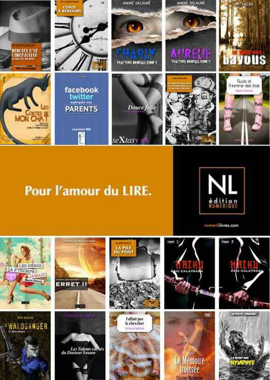

La maison normande est à leur image. Une vaste pièce centrale, percée de hautes fenêtres ouvertes sur la campagne et solidement accrochée aux poutres du plafond, donne envie dès qu’on y met les pieds de s’y caler dans le canapé anthracite aux coussins moelleux, les jambes repliées sous soi, un verre de marc à la main, à jaser toute une nuit devant un feu, d’y flâner tout un après-midi de jour pluvieux, dans l’un des récamiers campés à la droite de la cheminée de part et d’autre d’une table à café sur laquelle s’empilent, pêle-mêle, de beaux livres d’images et des revues d’art, ou de s’y attarder, le soir après dîner, dans l’autre coin, au creux d’un de ces fauteuils au cuir râpé à pousser une dame, entre deux phrases, sur le damier de bois où une partie attend qu’on la termine, ou de s’y vautrer paresseusement, au matin, plein est, dans l’une des bergères au velours côtelé effiloché, à guetter le soleil qui doit se pointer derrière l’un des carreaux, que l’ombre d’un hêtre rouge assombrit pour l’instant.
— J’aime cette maison, déclare-t-elle à Ev qui répond, réjouie, qu’elle l’adore.
Elle enserre la taille d’Ev et l’embrasse dans le cou.
— Tiens, s’étonne tout haut Isabelle, je n’avais pas remarqué qu’il y avait une pièce, ici…
Un recoin caché de l’entrée, entre la salle commune et la cuisine, une pièce de musique meublée d’un piano droit et de cinq fauteuils, tout aussi droits. Un violoncelle est assis contre le mur, des partitions de musique usées encombrent le piano et les deux lutrins, debout près du piano, sont garnis d’un archet et d’une flûte à bec.
— Wow ! Il doit se jouer ici des petits branles pas piqués des vers !
Ev la gratifie de son bel éclat de rire et, en moins de deux, elle aurait pu parler de menuets, franchement, elle le fait exprès, la voilà adossée au cadre de la porte, Ev caresse ses seins sous son polo, sa langue fouille sa bouche, sa cuisse ouvre hardiment les siennes, Isabelle s’allume. Saint-Sigmund, elle ne va pas, tout de même, la zigonner entre le piano et le violoncelle, Madeleine remue ses chaudrons dans la cuisine, juste à côté ! Avec Ev, ses accès de pudeur sont vains et inutiles. Il était plus prévoyant de faire l’amour avant de partir. Ev a décidé de filer sans détour, pour éviter les embouteillages du vendredi. Elle commence à déboutonner son blue-jean, en lui jouant du Schubert dans l’oreille gauche.
— Ev, tu ne trouverais pas plus pratique qu’on remonte dans la chambre ?
— Hon, hon… pas d’intermède maintenant, Darling !
Sa main s’infiltre dans son pantalon, Isabelle saisit fermement son poignet.
— Non, Ev, arrête ! Je ne peux pas me laisser aller ici.
Isabelle a eu gain de cause et droit à un « putain de merde » sonnant. Le léger branle 1506 de cinq minutes s’est transformé en Tchaïkovski 1812 d’une heure et quart, elle en sort abasourdie, les canons de la belle Anckert lui tonnent encore entre les ovaires. Mais elle préfère l’air encanaillé de Madeleine, qui s’exclame : « Dites donc, c’était une valise ou un train de marchandises que vous aviez à déballer ? », que de l’avoir vue débarquer en plein concert symphonique dans sa petite salle de musique.
— Désolée, Mado, mais tu sais ce que c’est, hmm ? Isa a de ces exigences !
— Saint-Sigmund, Ev Anckert, t’es culottée !
Et ces deux-là se tordent de rire. Madeleine lui jette un clin d’œil complice, pendant qu’Ev débouche un rosé, heureuse comme une lionne dans sa tanière, qui se pourlèche encore les babines de l’amuse-gueule qu’elle vient de se payer.
— Darling, je te sers quelque chose de plus corsé, là ?
Le week-end s’annonce tumultueux, Ev Lovelace est en grande forme.
— J’y ai déjà eu droit, Ev, merci, pas besoin que tu me débouches autre chose.
La guerre des éclats de rire vient de commencer et Philippe n’est même pas arrivé.
— Madeleine, enchaîne Isabelle, je peux faire quelque chose pour me rendre utile ?
Les écrevisses sont déjà cuites, Madeleine prépare une sauce d’accompagnement. Ev a glissé dans le frigo deux des bourgognes tirés de la caisse dont elle a garni le cellier de Philippe, en arrivant.
— Merci, Isabelle. Tout est sous contrôle. Rien de bien malin, quelques victuailles de fin de soirée !
Madeleine rit toujours autant, dodue comme un gros chat qu’on a envie de faire ronronner.
— Philippe ne devrait pas tarder, ajoute-t-elle. C’est Évelyne qui va râler d’arriver si tard.
— Et comment va ma superbe filleule ? s’enquiert Ev. Elle m’en veut, tu crois, d’avoir raté son anniversaire ?
— Tu lui manques, depuis deux mois, ma chérie. Elle t’en veut tout court, je le crains.
— Hmm, je vois… Isa, vaut mieux t’y préparer, Évelyne va te battre froid, faute de s’en prendre à moi.
Ev croque une lamelle de carotte, en lui tendant une fleur de brocoli.
— Et ça te fait rire ! réplique-t-elle.
— Han, han… Ce sera bien le seul membre de la famille que tu ne pourras pas séduire, Darling.
Ev lui envoie un baiser du bout des lèvres et se tourne vers Madeleine.
— Tu lui as quand même expliqué un peu de quoi il retourne, non ?
— Oh, non ! Je la laisse se débrouiller avec toi. Vous vous êtes toujours démerdées sans moi, d’ailleurs !
Isabelle s’étonne de la véhémence dans la voix de Madeleine, habituellement enjouée.
— Tiens, tiens…
Le sourire en coin, Ev s’appuie contre le frigo et scrute Madeleine, soudainement occupée à ses chaudrons comme un cuistot de chez Maxim’s.
— J’entends une pointe de jalousie, là… Je croyais que nous avions réglé cela ?
— Réglé, Ev chérie, c’est vite dit ! Évelyne te fera toujours les confidences qu’elle me refuse, à moi comme à Philippe d’ailleurs. Avoue que cela devient frustrant, à la longue, d’attendre qu’elle daigne se confier à toi, avant que nous soyons mis au parfum, à la condition, bien sûr, que tu daignes toi-même lever le voile sur la vie secrète et intime d’Évelyne Dauzières !
— Mado, réplique Ev de sa voix de basson, je te répète que je n’y suis pour rien. Je ne peux pas la forcer à te raconter ce qu’elle a déjà la manie de me cacher. Avec Évelyne, tu le sais, je joue à chat et à souris…
Ev attend la réplique qui ne vient pas, Madeleine concentrée, semble-t-il, sur sa crème dijonnaise qui, au train où elle la remue, s’inquiète Isabelle, va monter en beurre. Ev, que l’air bourru de Madeleine ne démonte pas le moins du monde, revient à l’attaque.
— Mais, dis-moi, là, il y a quelque chose qui te tracasse particulièrement ?
— Bon, écoutez, interrompt Isabelle, je me sens comme une intruse. Vous préférez que je vous laisse parler tranquilles ?
Ev et Madeleine se tournent vers elle et répliquent en chœur un non très ferme, auquel Madeleine ajoute d’un trait :
— D’ailleurs, cela vous concerne indirectement.
Isabelle ne cache pas son étonnement, Ev non plus, qui lance :
— Bon, là, tu expliques ou je m’énerve !
Assise près d’Isabelle, Ev lui caresse la cuisse et l’embrasse rapidement. Madeleine les rejoint, s’assoit en soufflant.
— Philippe s’inquiète pour Évelyne. Elle couche avec une fille, allègrement, à première vue du moins, depuis trois mois. Philippe croit, avec raison dit-il, qu’Évelyne patauge en plein drame d’identité, sans se l’avouer.
— C’est une plaisanterie, là, ou quoi ?
Ev ricane, incrédule.
— Eh, non, ma chérie, cela n’a rien d’une plaisanerie, crois-moi !
— Eh, ben, elle n’a pas fini de me surprendre, celle-là ! Et cette fille, tu la connais ?
— Évelyne ne se cache pas. C’est ce qui tracasse Philippe, entre autres. Nous avons eu droit aux présentations en règle. Une camarade de lycée, dont elle s’est entichée. Brillante, gaie, très sympathique et, naturellement, tu connais les goûts d’esthète de ta filleule, une beauté à faire bander le pape. Et deux fois plutôt qu’une !
Isabelle s’esclaffe avec Ev. Fichue Madeleine ! Comment Philippe parvient-il à s’inquiéter à ses côtés ?
— Ben, s’exclame Ev, où est le problème ? Qu’Évelyne s’envoie en l’air avec une fille ou que Philippe s’en inquiète ?
Ev a le don, se dit Isabelle, de cerner le problème le plus délicat en deux phrases et de le réduire, en un tournemain, à sa plus simple expression mathématique. Ce qui fait qu’au bout du compte, on a l’impression confuse, un, que le problème est un faux, deux, qu’il n’y a pas lieu de s’inquiéter pour rien, et trois, qu’on est vaguement niais ou ridicule de ne pas s’en être aperçu avant.
— Madeleine, glisse Isabelle, vous espérez que ce soit une passade ?
— Non, je n’espère rien du tout… Enfin, si ! Qu’elle soit bien, là où elle est. Seulement, je doute qu’elle sache elle-même où elle en est. Et s’il existe un secret bien gardé, c’est de savoir comment Évelyne parvient à endosser son aventure, enfin, cette liaison homosexuelle. Et là, faudra des doigts de fée pour lui tirer les vers du nez !
— Et c’est cela qui inquiète Phil ? Qu’Évelyne soit paumée, à se demander ce qui lui prend de préférer coucher avec les dames…
— Alors que sa chère marraine, l’interrompt Madeleine, ne se gêne pas pour s’envoyer les plus belles filles d’Alsace et de Bretagne, sans douter une seconde que ce soit la chose la plus naturelle, oui, voilà !
Ev éclate de rire, Madeleine lui emboîte le pas. Ce n’est pas avec elles qu’on assistera à un drame, ce soir.
— Sauf qu’Évelyne, relève Isabelle, n’a pas encore le coffre de la belle Anckert…
— Et qu’est-ce qu’il a mon coffre, Darling ?
— C’est le plus solide que j’ai jamais vu, Ev…
— Tandis que ta filleule, ma lionne, elle fait plutôt dans le mou, si tu vois ce que je veux dire. Elle a le modèle, pas le mode d’emploi.
La situation a beau être des plus sérieuses et délicates, elles sont pliées en quatre toutes les trois.
— Ouais, je vois ça d’ici ! Bon, Mado, tu me cèdes le contrat d’explorer les désirs inconscients de ta fille ?
— Ho, là ! Manu militari ?
Isabelle n’a pas le temps de s’étonner de la réplique de Madeleine, qu’Ev s’enraye déjà dans les hautes.
— Madeleine ! Je t’interdis d’insinuer de telles bêtises !
Madeleine s’esclaffe. Mais Ev ne rit pas.
— Oh, salope ! s’exclame-t-elle. Une sale blague à me faire, ça !
Madeleine se lève, contourne la table et vient enlacer Ev qu’elle embrasse dans le cou, en riant.
— Tu as raison, mais c’était trop tentant, ma lionne…
Isabelle les observe en silence. La première fois qu’elle les a vues se caresser, elle s’est sentie exclue. Elle pense à Gilles, jaloux lui aussi, au début, de son intimité avec Timothée. Une amitié passionnelle, indéfectible… N’empêche, se dit-elle, l’allusion de Madeleine était étrange. Comme si Ev pouvait s’en prendre à Évelyne… C’est grotesque ! Quand le diable galope, les chevaux mangent du foin. Le dicton de grand-mère Coache lui trotte dans le crâne. Un drame nous pend au bout du nez, la vie continue, insouciante…
— Madeleine… Vous et Philippe, vous croyez qu’Évelyne est amoureuse d’Ev ? Qu’il pourrait…
— Isabelle, qu’est-ce que tu vas chercher là ? Tu fais dans la marmelade oedipienne, maintenant ?
— Vous, Isabelle, c’est ce que vous croyez ? demande Madeleine, sans tenir compte de l’interruption d’Ev.
— Pas exactement, répond prudemment Isabelle. Et, quoi que tu en penses, Ev, je ne fais pas dans la psychanalyse à trois sous non plus. Mais tu mènes une vie à faire rêver n’importe quelle fille un peu délurée et, si je t’avais pour marraine, je serais pâmée sur toi, comme on l’est de son idole…
— Pâmée sur moi, sursaute Ev, qu’est-ce que c’est que ce charabia ? Non, mais, ça ne va pas ?
— En tout cas, poursuit Isabelle, si Évelyne était ma fille, je me demanderais si elle a vraiment envie des femmes ou si elle n’est pas en train de se fendre en quatre pour mieux te ressembler.
— Hou, la, la… Haro sur la mère Anckert, ça me fait la belle jambe ! Et si je n’y étais pas, madame Docteur, tu t’en prendrais à qui ?
— Ev, attends…
Isabelle veut la rassurer, mais Ev est sur sa lancée.
— Aux spermatozoïdes de Phil ? À la carrière de Madeleine ? Qu’est-ce que tu développerais comme théorie, si je n’étais pas là pour tout expliquer ?
— Ev, arrête ! Je ne t’accuse de rien, je dis simplement qu’Évelyne semble s’efforcer de paraître à l’aise avec son homosexualité, alors qu’elle ne l’est peut-être pas du tout.
— Quoi, lesbienne ?
— Non, Ev, à l’aise… C’est ça qui te ressemble, pas le fait qu’elle couche avec une femme ! Sapristi, à dix-sept ans, on hésite encore à s’habiller différemment des autres, ce n’est tout de même pas évident de se vautrer dans la différence puis d’être morte de rire !
Un arpège de mezzo s’écroule sur sa phrase. Isabelle allait se vexer, Ev lui coule un regard amoureux, avant de se tourner vers Madeleine.
— Tu crois qu’avec une psy comme ça, on peut avoir le dernier mot, là ?
— Il semble qu’Isabelle ait saisi l’essentiel, ma chérie. C’est avec Évelyne que je te souhaite d’avoir le dernier mot. Elle devient d’une humeur massacrante dès qu’on aborde le sujet.
Madeleine laisse traîner sa main sur les épaules d’Isabelle en retournant à ses chaudrons, un merci affectueux qu’elle reçoit avec le sourire.
— Viens là, toi…
Ev l’empoigne par le cou et l’embrasse sans pudeur, passionnément. Elle la dévore, elle l’avale, sa bouche conjugue je te veux, c’est son je t’aime à elle. Isabelle se laisse aimer, ravie. Ev en est au plus-que-parfait du subjonctif, quand le rire de Madeleine clignote dans le brouillard :
— Dis donc, ma chérie... Avec ma dijonnaise, ce ne serait pas meilleur ?
— Tiens donc ! Ma marraine déserteuse !
Isabelle voit, de dos, une longue fille vêtue d’un jean délavé et rapiécé aux fesses, tout en jambes sous un ample chemisier de denim, une tresse majestueuse plus auburn que blonde qui ballotte doucement, en suivant la cadence d’une démarche sautillante qu’elle reconnaît d’emblée comme celle de Philippe. La voix, le timbre enjoué et le ton direct sont de Madeleine. Ev l’accueille de son plus chaleureux sourire et prend la tête d’Évelyne entre ses mains pour l’embrasser. Évelyne se redresse aussitôt :
— Bah, dis donc ! Qu’est-ce qui t’as pris de me faire faux bond ?
— Je te rappelle, mon amour, que l’an dernier, tu n’étais pas là pour mon anniversaire, hmm ?
— Rien à voir. J’étais aux classes d’été, à me faire suer. Toi, tu te faisais suer aux Baux, à t’envoyer une autre bonne femme, là, une Québécoise, paraît…
Évelyne vient d’apercevoir Isabelle. Les trois verres serrés entre les mains, Isabelle regarde Ev se mordre la lèvre pour ne pas rire, lui tend son armagnac et dépose celui de Madeleine sur la table.
— Salut, Évelyne ! lui lance Isabelle, le ton enjoué.
Elle est superbe. Philippe en fille, les mêmes yeux gris, dans lesquels Isabelle braque les siens en souriant. Son verre dans la main gauche, elle lui offre la droite, qu’Évelyne serre en la reluquant comme si elle sortait d’en dessous de la table.
— Isabelle… La bonne femme qu’Ev s’est envoyée pendant une semaine, aux Baux… Je suis Québécoise, ça s’entend. Pour le reste, j’ai le culot de croire qu’Ev et moi, on se fait suer réciproquement !
Madeleine et Ev éclatent de rire en chœur, Évelyne lâche un « merde ! » bien sonnant et finit par ricaner elle aussi.
— Tante Ev, tu aurais pu me prévenir, non ?
— C’est Isabelle qu’il aurait fallu avertir de tes manières cavalières, tu ne crois pas, ma chérie ?
Madeleine, que l’incident n’a pas troublée outre mesure, rit encore.
— Philippe et toi avez dîné ? enchaîne-t-elle, tout de go.
— Oh, oui… Au resto sur l’autoroute, je mourais de faim.
Évelyne embrasse Madeleine.
— Papa devrait se pointer bientôt, il est passé à l’écurie. Je vous accompagne pour le pousse-café.
Se tournant vers Ev :
— Qu’est-ce que tu bois ?
Elle trempe les lèvres dans le verre d’Ev, déclare que c’est rudement solide, ponctue :
— Tu fais toujours dans le corsé, hein ?
Ev rit, en la mangeant des yeux, ces deux-là s’adorent réciproquement, conclut Isabelle. Évelyne se tourne vers elle, brusquement.
— Vous m’en voulez de ma bourde ?
— Non, pas du tout. C’est le corsé qui vous fait penser aux Baux ?
— Mince ! Vous dégainez toujours aussi vite, en Amérique ?
— Seulement quand on se trimballe en France, question de santé !
Madeleine rit à gorge déployée, Évelyne avale sa tresse, Ev en rajoute :
— Évelyne, tu as trouvé ton Waterloo !
Évelyne va se chercher à boire. Isabelle s’installe auprès d’Ev, qui caresse sa nuque, la flirte en douce :
— Ça va, Darling ?
Ravie de son aplomb, Isabelle fait signe que oui, se tourne vers Madeleine qui les observe en souriant.
Évelyne finit par s’asseoir et décrète, sans préfacer :
— Isabelle, nous sommes les deux jeunesses de la maison, alors on se tutoie, hein, c’est vachement plus sympa !
Le week-end, se dit Isabelle, sera historique.
— Je déteste conduire. Cela ne vous ennuie pas ?
Au contraire, précise-t-elle, elle prend sa revanche, Ev refuse catégoriquement de lui accorder ce plaisir. Madeleine rétorque :
— Rien d’étonnant, elle a horreur de se laisser conduire… Ev se montre toujours très tendre avec vous. Vous l’avez apaisée…
— Je plie facilement, je m’étonne moi-même de ma souplesse !
Le rire complice entre elles, encore.
— Non, sans blague, Madeleine, je charrie… Ev me fait faire un bout. Elle est magnifique, vous savez. Puis elle me gâte sans bon sens, je suis pourrie jusqu’à la moelle ! Elle est parfois soupe au lait, mais je m’en accommode plutôt bien. Disons que je ne céderais pas ma place pour un empire. Oh, ça me fait penser, je vous dois une bouteille…
Isabelle raconte à Madeleine, qui rit tout le long, l’histoire de la femme de ménage et la scène du Bataclan.
— Sans vous, je crois bien que je perdais le nord, encore une fois. Faites-moi plaisir, Madeleine, je vous dois bien ça. Un vieux porto, ça vous irait ?
— Mmmm… J’accepte avec plaisir, à la condition que nous le débouchions ensemble, ce soir.
— D’accord, vendu ! Là, je prends à gauche ?
— Non, à droite… Et quelle pilote je fais !
— Le pire qui peut nous arriver, c’est de nous perdre dans Honfleur. À défaut de ratatouille, on pourrait toujours ouvrir trois boîtes de cassoulet…
— Avec les grands bourgognes de la lionne endimanchée, je vois ça d’ici, ce serait parfait !
La perspective d’un bide aussi spectaculaire ramène Isabelle à une tracasserie qui la chicote depuis qu’elles ont décidé, Madeleine et elle, de souligner l’anniversaire d’Ev, à son insu.
— Madeleine, vous ne pensez pas qu’Ev va se vexer qu’on lui ait joué dans le dos comme ça ?
— Elle va râler un peu, c’est sûr.
— Moi, j’ai l’impression qu’elle va hurler, quand elle va se rendre compte de tout le complot, que c’est son anniversaire à elle et pas seulement celui d’Évelyne que nous fêtons. Si vous ne me l’aviez pas dit, je n’aurais jamais su que c’est son anniversaire demain. Elle doit avoir ses raisons pour me le cacher, non ?
— Ev n’aime pas être fêtée, vous n’y êtes pour rien. Là, prenez à gauche… Oui, voilà.
— Évelyne n’est pas déçue du changement de programme ?
— Au contraire, elle est ravie ! Ce n’est pas tous les jours qu’elle peut se payer une telle combine sur le dos de sa marraine. L’idée lui a plu d’emblée.
— Mais le grand restaurant, ce soir, c’était pour elle…
— Oh, pour ça, rien à craindre ! Ev la promène d’une grande table à l’autre depuis qu’elle est en âge de tenir une cuillère. Évelyne savait décortiquer un crabe, avant de marcher.
Le tableau fait rire Isabelle.
— Ouais… J’imagine très bien la belle Anckert en marraine gâteau… Évelyne lui en veut beaucoup de ne pas être là, en ce moment.
— Il n’y a qu’à Ev, je crois, qu’elle puisse confier ses émois… C’est tout de même inouï que nous n’ayons rien vu venir. La lionne non plus, d’ailleurs !
— Ev a toujours emmené ses maîtresses chez vous ?
Madeleine la scrute en silence, quelques instants.
— Oh, Madeleine, je ne mène pas une enquête, rassurez-vous ! Je me disais que ça semble tellement ordinaire, pour Philippe et pour vous, qu’une femme en aime une autre, qu’au bout de la ligne… Comment je peux dire…
— Il n’y avait rien à voir de si remarquable, c’est ça ?
Isabelle hoche la tête, lui jette un coup d’œil. Madeleine l’observe, sa belle tête de lune s’épanouit d’un sourire.
— C’est gentil à vous, Isabelle, de tenter de me rassurer. Votre théorie, enfin, cette opinion que vous avez énoncée, hier, à propos de l’affection admirative d’Évelyne pour Ev, eh bien, c’est tout à fait ce que Philippe craint. Peut-être Évelyne est-elle en train de se perdre sur les traces d’Ev.
— Ça vous inquiète qu’Évelyne puisse être homosexuelle ?
— Homosexuelle, homosexuelle… Ce n’est pas si sûr ! L’été dernier, elle en pinçait pour un jeune homme et, croyez-moi, elle ne s’embêtait pas !
— Elle couchait avec lui ?
— Et c’était torride, oui !
Son rire jette du jaune dans l’air. Pour Madeleine, la vie se déroule en une série de tableaux cocasses, qu’elle croque à plein cœur.
— J’explique, enchaîne-t-elle de sa voix gouleyante. Je m’étais palantée hors du lit, à l’aurore. J’allais seller ma Grisou et, en mettant le pied dans l’écurie, un boucan du terrible, ces deux-là s’ébattaient, et allez donc, dans le tas de foin ! Évelyne râlait, au bord du précipice. À l’entendre ahanner, Nicolas devait la servir généreusement, il n’était pas loin de son compte, lui non plus. Mais ce dont je ne doute pas, c’est qu’Évelyne y trouvait tout son plaisir. Oh, Isabelle, non, ne prenez pas cette courbe ! Tout droit… Oui, voilà !
— Pfiou ! On a failli se ramasser en Bretagne !
Madeleine réplique que, quand même, la Bretagne, faut pas forcer et rit de bon cœur, quand Isabelle lui fait de la main droite un signe dubitatif.
— Dites, je ne vous ennuie pas, avec toute cette histoire ?
— Pas du tout, Madeleine… Mais j’avoue que je ne saisis pas ce qui vous tracasse dans tout ça.
— Bah, je suis dans le noir ! Je ne comprends pas qu’elle se donne tout ce mal pour cette fille. On ne change pas son cheval borgne pour un aveugle ! Qu’elle ne prenne pas son pied avec les hommes, qu’elle n’éprouve aucun attrait pour eux, là, je comprendrais qu’elle aille voir ailleurs…
— Vous pensez que c’est un pis aller ? Qu’on est homosexuelle par dépit ?
Isabelle a levé de son siège, le ton a suivi.
— Ah, non, ne me faites pas dire ce que je n’ai pas dit ! J’ignore ce que vous avez vécu. Ev, elle, a dû se battre pour se faire respecter. Vous n’avez pas idée des mesquineries qu’elle a essuyées. Il faut un sacré courage pour vivre différemment des autres et je sais de quoi je parle !
— Et c’est ça qui vous fait peur, pour Évelyne ? Qu’elle aille se compliquer la vie, alors qu’elle pourrait…
— Alors qu’elle pourrait s’envoyer en l’air, peinarde, avec un type et, pourquoi pas, se faire deux ou trois marmots et vivre, sacrebleu, vivre paisiblement sa vie, sans devoir se battre toute sa vie, pour défendre avec qui elle baise !
Isabelle rit. Au fond, Madeleine a raison, c’est aussi simple que ça. À choisir entre le trouble et la fête, personne n’hésiterait, vivement la joie tranquille !
— C’est du joli, n’est-ce pas ? ajoute Madeleine doucement. Et vous allez me dire qu’Évelyne sait mieux que moi ce qu’elle a à faire.
— Ev est censée lui parler, ce soir. Elle vous l’a dit ?
— Oui, oui...
Madeleine se retire dans son silence, Isabelle retourne à la route en lacets, aux arbres échevelés qui la bordent, splendides dans le soleil qui leur remue le vert, du céladon à l’émeraude, un bruissement de lumière comme elle n’en a vu qu’ici.
— Madeleine… Ev dit que vous aviez fait de l’acrylique.
— Oh… oui, au début.
— Oui, je sais… J’ai l’air de faire du coq à l’âne, je viens de penser à votre passion pour l’eau-forte. C’est fichument plus compliqué que l’acrylique, non ?
— Sacrebleu, mais qu’est-ce que c’est que ce baratin à la noix ?
Elle rit, en poussant Isabelle du coude.
— Allez, allez, dites-moi ce que vous avez derrière la tête !
— Ben, peut-être qu’Évelyne a fait le tour de l’acrylique, peut-être qu’elle explore l’eau-forte, peut-être qu’elle reviendra à l’acrylique, peut-être pas… Mais si elle a vraiment la passion de l’eau-forte, elle va bien trouver le courage de faire avec ses difficultés, vous ne pensez pas ? Surtout qu’elle n’est pas seule, elle vous a, vous, Philippe, Ev… Il me semble qu’Évelyne ne manque pas d’audace.
— Oh, pour ça, elle tient de la lionne ! N’empêche… Je doute qu’Ev saisisse à quel point Évelyne a besoin d’elle.
— Mais vous, vous êtes là.
— Oui, quand tout va bien. Dans les coups durs, Évelyne s’esquive… Je n’ai pas toujours été disponible, vous savez. Ev, si. Dès le début… Évelyne passait des journées entières aux Éditions. Ev avait installé un parc à jouets dans un coin de son bureau. Elle lui faisait classer son courrier, répondre au téléphone… Sacrebleu, c’est inouï la patience qu’Ev a pu avoir avec cette enfant ! Surtout quand on connaît la lionne.
— Là, je vais où, Madeleine ?
— Serrez à droite. Attention, au carrefour, c’est la cohue ! Changement d’à-propos, Isa… Vous permettez que je vous appelle Isa ?
Isabelle fait oui.
— Votre départ, dimanche prochain, est définitif ?
Elle hoche la tête.
— Dommage que vous ne puissiez pas demeurer plus longtemps… Vous nous manquerez, ajoute-t-elle, en lui tapotant la cuisse.
Le changement d’à-propos prend Isabelle au dépourvu.
— Je n’ai aucune envie de partir, Madeleine… Mais il y a les cours qui reprennent, la clinique. Ils ont bien voulu m’attendre deux mois, ils ne vont pas attendre plus longtemps.
— Ev est très éprise, vous vous en rendez compte, n’est-ce pas ?
La voix de Madeleine se fait toute douce, une lisse sur un carré de soie. Pourtant, se dit Isabelle, s’il lui arrivait de faire du mal à sa lionne, elle lui arracherait les yeux. Elle doit lui en vouloir, elle aussi, de s’en retourner à diable Vauvert. Ev, elle, n’a encore rien dit du départ, mais…
— Tout en haut, s’égaye Madeleine, tournez à nouveau à gauche et, dès que vous pourrez vous garer, allez-y ! Nous sommes à deux pas du marché…
Isabelle n’est pas fâchée d’arriver. Cette conversation prenait des allures de procès. Poli et tout gentil, mais faudrait qu’elle assure sa défense. La voix de Madeleine la relance.
— C’est à elle, surtout, que vous manquerez.
— Elle va me manquer à moi aussi… Madeleine, vous me trouvez sans-cœur de repartir, hein ?
— Pas du tout ! Qu’est-ce que vous allez chercher là ?
Pour toute réponse, Isabelle hausse les épaules, esquisse un maigre sourire. Parler de son départ la bouleverse. Elle se sent coupable de tout abandonner, une petite voix l’implore de rester, elle n’en a pas le courage. Mais Ev va te manquer, idiote ! Oh, elle n’a pas besoin de moi dans sa vie. Elle me veut parce qu’elle sait que ça ne l’engage à rien ! Tu te racontes des histoires, Coache. Elle est folle de toi, même Madeleine essaie de t’en convaincre. Madeleine, Madeleine… Elle veut que je reste, parce que sa lionne est heureuse… Tout s’embrouille.
— Oh, Isa… Je vous ai attristée ?
— Madeleine, Ev néglige son travail pour moi. Ça ne durerait pas longtemps…
— Oui, oui, je vois… La peau est plus proche que la chemise, n’est-ce pas ? Je ne crois pas qu’Ev quitterait aisément tout ce qu’elle possède ici pour aller vivre à vos côtés au Québec. Et cela, en dépit de ses sentiments envers vous. Alors, pourquoi serait-il plus facile pour vous de tout laisser pour elle, hmm ?
Elle lui tapote encore la cuisse, en souriant.
— Oh, Isa, j’allais oublier ! Philippe a rapporté les bottes, hier soir, comme prévu. Elles sont déjà emballées. Il dit qu’il a trouvé exactement le même modèle que les autres.
Isabelle la remercie, en garant la Renault 5 dans le spacieux espace qu’une BMW lui cède, miraculeusement, juste à l’entrée du marché.
— Dites-moi, vous l’avez vraiment poussée à l’eau tout habillée ?
— Han, han… Guido m’a dit qu’avec le chlore, ses bottes étaient foutues.
— Son orgueil d’Amazone a dû en prendre un coup, plus que ses bottes !
— Elle a beaucoup ri…
— Avec vous, elle ne fait que cela. Mais, gare à vous, hein ! Je parie que vous vous retrouverez à la flotte d’ici dimanche.
— Ouais… J’y ai pensé. Tout habillée ou flambant nue. Avec Ev…
—… on ne sait jamais !
Encore l’éclat de rire entre elles.
— Vous avez apporté la liste ?
Madeleine la lui met sous le nez, comme un trophée, l’air de dire : je suis mauvaise pilote, mais pas si nouille. Isabelle rit, heureuse de se sentir à l’aise, comme si elles se connaissaient depuis deux siècles.
— Vous croyez, Madeleine, qu’on arrivera à tout cuisiner en si peu de temps ?
— À moins qu’on se mette à picoler, je crois que si. Philippe va prolonger la randonnée pour près de trois heures. Et comptez sur Évelyne pour occuper la belle Ev en revenant. Elle n’a pas son pareil dans ce genre de cachotterie. Pour le reste, Isa, cessez de vous tourmenter, voulez-vous ? Ev sera ravie, vous verrez, bouleversée, mais complètement ravie. Vous aviez raison, votre idée est géniale. Rien ne peut lui faire plus plaisir, à cette abonnée des restaurants, qu’un grand dîner à la maison. Ev a beau être parfois imprévisible, nous ne pouvons pas être quatre à nous gourer à ce point, non ?
— J’aime bien quand tu sens l’étalon et la sueur. J’ai tout de même un faible pour ton parfum de sous-bois.
Elle est splendide dans cette robe pervenche, Isabelle la complimente. Ev la remercie d’un baiser sur la joue.
— Mon seul regret est de t’avoir balancée à l’eau avant de te déshabiller…
Sa griffe Rabane est à sécher, piteuse, dans le lavoir. Un vol plané spectaculaire. Et Isabelle, qui s’était demandé ce qu’Ev attendait pour aller se changer, redoutant qu’elle ait la puce à l’oreille sur ce qui se tramait dans la cuisine.
— Te rends-tu compte, Ev, que j’aurais été obligée de t’accompagner dans ce chic resto en blue-jean ?
Ev chantonne son petit « hmm, hmm » victorieux. Isabelle l’embrasse dans le cou. Elle aime la chaleur de son corps et ses bras qui l’enserrent solidement. La cascade de contralto résonne dans sa poitrine. Ev la repousse doucement par la taille.
— Tu m’as bien eue, hein ? Tu cuisines drôlement bien. Tu me caches d’autres talents ?
À part le café, les œufs brouillés et la gymnastique suédoise qu’elles y pratiquent à l’occasion, la cuisine demeure chez Ev un art mystérieux et une pièce inutilement meublée.
— En ce qui me concerne, je déclare que le dîner était parfait ! Encore merci, Ev, pour tes bourgognes… Superbes !
Philippe atterrit dans le salon, un seau à glace dans une main, le champagne dans l’autre. Évelyne suit, avec les coupes. Madeleine arrive en s’esclaffant :
— Isa, vous auriez dû vous charger du dessert, le flan est sens dessus dessous au fond du coffre !
— Bon sang, Mado, tu ne peux pas arrêter un peu… On ne s’entend plus souffrir, ici, tellement on rit !
Entre Ev et Madeleine, c’est le concours de la répartie absurde.
— Ouais, ben, t’as tout de même balancé Isabelle à la flotte. Ça ne faisait pas partie du programme !
Isabelle observe Évelyne, tente de comprendre ce ton vindicatif sorti d’une boîte à surprise. Ev, sans hésiter, lui réplique hardiment.
— Tu défends Isabelle, là, ou tu m’attaques ?
Sur quoi, Évelyne se tourne vers Isabelle :
— Et toi, tu avais prévu le show ?
Le ton l’agresse, Isabelle se fige, muette. Ev rompt le silence chargé d’électricité.
— Évelyne, si cela t’intéresse, j’avais un vieux compte à régler avec Isa depuis les Baux. Rien à voir avec le dîner ni avec la surprise, tu piges ?
Elle ajoute d’une voix plus douce :
— À propos de compte à régler, mon amour, nous avons à parler, toi et moi, après le dessert.
— Et de quoi veux-tu qu’on cause ?
Évelyne a répliqué du tac au tac. Son arrogance est émouvante, un lionceau qui se balade à deux pas de sa mère, en se prenant des allures de John Wayne.
— Du ton avec lequel tu me parles depuis hier, entre autres. Et de ta nouvelle flamme. Tu veux plus de détails maintenant ?
Ev a usé de son basson monocorde qui, chez Isabelle, sonne l’hallali. Évelyne, elle, la darde de ses yeux gris, sans broncher d’un cil. Isabelle a le flash du duel dont elle a été témoin entre Philippe et Ev. Quinze secondes, vingt, tout au plus, et Évelyne réplique, ingénue.
— Les détails, je te les fournirai moi-même tout à l’heure.
Puis, en riant :
— Mais si tu continues à me faire ta gueule de mercenaire, les détails tu te les fous où je pense !
Un bel amalgame de Philippe et de Madeleine. Ev sourit, en détournant la tête vers Madeleine qui hausse les épaules, puis vers Philippe, radieux, fier de sa fille qui ne s’en laisse pas imposer par l’Amazone. Évelyne enchaîne, insouciante :
— Bon, ben, moi, je fais quelques brasses avant le dessert. Isabelle, tu m’accompagnes ?
Plus imprévisible que ça, se dit Isabelle, c’est la loterie.
— Je peux te prêter un maillot, insiste Évelyne, à moins que tu ne préfères avec tes fringues ?
— Non, Évelyne, seulement quand je suis en tenue de soirée !
Isabelle a repris du poil de la bête, s’en félicite. Évelyne ricane, tout à coup complice. L’invitation reste une énigme. Si Évelyne veut réparer sa rudesse de tantôt, vaut mieux ne pas refuser. Pourtant, Isabelle hésite, elle n’a aucune disposition pour la rivalité. Madeleine la sort du bourbier :
— Isa, ne vous sacrifiez surtout pas ! Évelyne peut faire quelques longueurs sans vous. Mais si vous en avez envie, l’invitation est sincère. De toute manière, nous attendrons pour le dessert.
Évelyne possède à dix-sept l’assurance qu’à trente-deux, elle espère avoir à cinquante ans. Même fragile et vulnérable, elle encaisse ses doutes avec la même ardeur que ses certitudes. Isabelle l’envie de savoir déjà, à son âge, que la vie est une eau vive qui coule paisible si on ne la retient pas.
— Bah, si tu ne veux pas m’en parler, tu me le dis…
— Évelyne, laisse-moi le temps d’y penser ! Pas aussi longtemps, non, ça n’aurait pas duré. Si c’était uniquement physique, je serais déjà repartie. Ça va ensemble, j’aime ce qu’elle est et j’ai envie d’elle.
— Et tu as déjà désiré autant ?
Isabelle fait signe que non. Évelyne cherche en elle les réponses à ses propres tourments. Isabelle aimerait lui retourner ses questions, elle n’ose pas. Évelyne s’accorde le privilège de l’incursion à la Anckert : tu t’ouvres d’abord et, si tu me fais confiance, je m’ouvrirai peut-être, à mon tour. L’exploration va bon train.
— Et tu ne l’as jamais fait avec quelqu’un que tu n’aimais pas, juste pour la baise, comme ça ?
— Oui, souvent. Pas toi ?
Isabelle se dit qu’elle va recevoir le boomerang en plein front.
— Non, je ne peux pas… Si je suis pas en adoration, je bande pas, c’est la chiasse !
Cette fille la désoriente. Elle a la fraîcheur ingénue d’une enfant, la désinvolture insolente d’une adolescente et l’intensité troublante d’une femme de quarante ans.
— Eh, bien… ne change pas d’une virgule, Évelyne, tu n’as rien manqué !
— J’adore ton accent, c’est rudement chouette !
— J’adore le tien aussi. Et je sors, je suis gelée !
Depuis une demi-heure qu’Évelyne enquête minutieusement sur son désir. Son désir des hommes dont elle s’est informée. Oui, elle avait couché avec des hommes. Oui, elle avait pris son pied. Non, ça n’avait rien à voir avec ses préférences. Pourquoi les femmes ? Parce qu’elle se sent plus entière. Au Québec, c’est plus ouvert qu’en France ? Oui, peut-être, et moins sexiste. Et puis Ev ? Sujet délicat, qu’Évelyne a effleuré avec plus de réserve, mêlant sa curiosité discrète envers Isabelle à son admiration manifeste pour la vie audacieuse de sa marraine. Évelyne l’a auscultée, cherchant la faille, sa propre faille, avec l’avidité d’un état d’urgence. Isabelle se reconnaît dans cette adolescente fiévreuse, qui sort de son cocon ouaté, qui souffre et se révolte qu’on ne l’ait pas avertie qu’au dehors, la vie est difficile et la liberté, pointée du doigt. Toute cette enquête déguisée sous le couvert d’un court métrage dont elle fignole le scénario depuis six mois. Son rêve, faire des films, qu’elle raconte à Isabelle avec la même passion que Madeleine pour son art, teintée de la fébrilité de celle qui n’a pas encore fait ses preuves. Qu’à cela ne tienne, observe Isabelle, entre deux piaffements fougueux, Évelyne s’émeut de la « super ciné » que sa « super marraine » lui a offerte, s’enorgueillit des films qu’elle en tirera et promet qu’elle révolutionnera ce « plateau de vieux ploucs ». Isabelle n’en doute pas un instant. Il ne manque à cette fille que le temps d’avoir un peu vécu, la flamme et la lumière lui sont acquises depuis longtemps.
Isabelle frissonne, l’air est frais, malgré juillet. Évelyne grelotte en s’asséchant.
— Maman dit que tu repars, dimanche prochain. C’est sérieux ?
Saint-Sigmund, ils ne vont pas s’y mettre à quatre !
— Oui, c’est sérieux.
La répartie est plus sèche qu’Isabelle ne le souhaitait.
— Alors, comment fais-tu ?
Mais cela ne décourage pas une Évelyne Dauzières.
— Comment je fais quoi ? s’impatiente Isabelle.
— Bah, tu l’aimes ou tu ne l’aimes pas ?
La question résonne sur l’eau, rebondit dans l’air, Isabelle cherche le sien. Évelyne s’est enroulée dans sa serviette et la regarde paisiblement. Les larmes montent aux yeux d’Isabelle, brusquement. Il y a des cruautés inconscientes qui valent bien des méchancetés préméditées. Le regard d’Évelyne a déjà tout saisi, avant même qu’elle esquisse un sourire frelaté.
— Je veux dire, se reprend-elle, comment tu fais pour partir. Tu l’aimes à en cramer.
Isabelle lui en veut d’être aussi crue.
— Évelyne, ne mêle pas mes sentiments aux tiens, veux-tu ?
— Je ne mêle rien, je dis ce que je vois… Allez, relaxe, c’est pas l’Inquisition !
Son sourire la dégivre. Il n’y a pas de mesquinerie chez elle, rajuste Isabelle, c’est moi qui suis sur la défensive. Évelyne, elle, fait dans l’offensive.
— Tu as peur que je lui vende la mèche ?
— Ben, non… Ev sait parfaitement où j’en suis. Je n’ai rien à lui cacher.
— Ben alors ?
— Ben alors, oui, je l’aime ! Et je dois partir. Et je ne veux surtout pas savoir comment je fais. Ça répond à ta question ?
— Et ça ne te donne pas envie de tout casser ?
Plus têtue qu’une tique sur un croupion ! Isabelle commence à se découdre. Et dire qu’Ev la trouve désarmante… Elle doit en baver un coup avec sa filleule. Isabelle rend les armes en riant.
— Des fois, oui… Mais je préfère encore baiser !
— Tu vois bien, conclut Évelyne en riant de concert, que tu lui vas comme un gant !
Ev la rejoint vers une heure, passe à la salle de bain. C’est long, Isabelle l’attend impatiemment. Ev, enfin, se glisse dans le lit.
— Bon anniversaire, madame Anckert !
Isabelle s’en empare. Elle veut se retrouver au plus creux d’Ev, elle veut la faire tanguer, l’entendre remuer ciel et terre, la voir s’illuminer. Ev se laisse prendre comme le dernier transatlantique, heureux de s’en retourner à quai avec quelqu’un de connu au gouvernail.
Rassasiées, leurs bouches se cherchent encore, se font la tendresse, se détachent. Ev lance d’un souffle :
— Dis donc, toi, que lui as-tu raconté ? Évelyne croit que tu t’installeras ici.
— Comment ça ? s’étonne Isabelle.
— Pour de bon, Darling. Qu’est-ce qui lui fait croire ça ?
— Je ne sais pas… Je lui ai dit que je n’ai aucune envie de partir, de te quitter. Elle a peut-être compris que je changerais d’avis.
— Et, bien sûr, ce n’est pas le cas… N’est-ce pas ?
— Non, bien sûr…
La voix d’Isabelle a rapetissé, un murmure étranglé. Son corps se replie lui aussi, elle a froid tout à coup, se colle sur Ev qui l’accueille en remontant le drap sur elles. Elle aime cette femme, elle la quitte, elle sait qu’elle a raison.
— Tu as la trouille, hmm ?
— Pas plus que toi ! rétorque Isabelle, vindicative.
La cascade de mezzo lui gargouille sur le ventre, lui délie les tripes, elle s’esclaffe à son tour. La bataille n’aura pas lieu, se rassure-t-elle. Elles ont toutes les deux très mal que ça finisse, encore plus peur que ça se poursuive. Leur rire s’étiole, Ev l’enveloppe de plus près, amoureuse. Isabelle lui demande si ça s’est bien passé avec Évelyne.
— Elle est malade de cette fille, raconte Ev. Vingt-quatre heures sans lui parler et c’est le désespoir sans fond. Je lui ai fait remarquer qu’il n’est pas obligatoire d’être aussi follement éprise de sa belle Michèle pour se donner le droit de la désirer.
— Quoi, tu penses qu’Évelyne confond le désir et l’amour ?
— Pire, le désir et la conquête… Elle m’inquiète, tu sais.
— Évelyne en est à sa première expérience, Ev, c’est normal qu’elle soit troublée.
— Bah, non, voilà ! Évelyne n’en est pas à ses premières tentatives ! Elle a déjà eu deux aventures avant Michèle, sans que personne n’en sache rien. La petite gueuse ! Tu sais ce qu’elle m’a balancé ? Si je ne peux pas faire craquer une femme, sous prétexte qu’elle n’a jamais connu que des hommes, vaut mieux rentrer dans le rang !
— Sapristi, y a du Anckert là-dessous !
— Ouais… j’en ai peur. Le problème, tu vois, est qu’elle s’esquinte depuis le début à séduire l’autre. À la faire jouir, en plus ! Comme si on pouvait forcer le désir… Madeleine a raison, Évelyne a eu le modèle, pas le mode d’emploi !
Ev avoue qu’elle se sent responsable de ce qu’elle appelle le donjuanisme d’Évelyne. Une responsabilité qu’elle endosse de plein fouet, avec la vigueur de l’Amazone qui transforme une menace en défi, un péril en règlement de compte, un doute en enquête systématique. L’autoflagellation, la honte et la culpabilité ne font pas partie de son monde intérieur. Ev croit en elle comme d’autres en Dieu, convaincue que rien n’est plus grave que de ne pas s’aimer soi-même.
— Je lui ai dit : tes performances, on s’en fout, tu n’impressionnes personne et tu te coupes stupidement de ton plaisir en cherchant à séduire cette fille ! Elle m’a envoyée paître, en me plaquant à la figure que je suis mal foutue de lui faire la morale sur les dangers de la séduction, avec ma kyrielle d’amantes. Je lui ai fait remarquer que, si j’ai couché avec toutes ces femmes, j’avais d’abord eu envie d’elles et pas de les séduire, et qu’à confondre le désir avec l’épreuve de force, elle finira par s’avaler elle-même. Putain, il était temps que je lui mette les points sur les i à cette gosse qui joue les tombeuses !
— Ev, pas si fort… Pas besoin que tu te mettes à hurler, je peux lire entre les lignes…
Isabelle chuchote presque, pour ramener les vibrations à leur point de départ. Ev ricane, moqueuse.
— Évelyne dit que tu mérites le Nobel de la paix. À l’entendre, tu as fait de moi une chatte angora. Elle dit aussi, et là je le lui concède d’emblée, que tu es une femelle bandante.
— Quoi ? Saint-Sigmund ! Elle est encore plus macho que toi !
— Chhhhut… Tu vas la réveiller, Darling ! Tu sais qu’elle a le sommeil léger…
— Eh Anckert, t’as fini de te payer ma tête ?
— Hmm, hmm…
Ev la tire vers elle et l’embrasse longuement.
— Tu veux connaître la suite, là, maintenant ?
— Oui, si tu enlèves tes mains de là…
— Bon, mais je ne vais pas passer ma nuit à te parler d’Évelyne !
— J’espère bien ! Elle t’en voulait vraiment beaucoup ?
— Elle m’a traitée d’infidèle. Elle est plus possessive qu’elle veut bien se l’admettre. Elle se tapait le téléphone depuis Lausanne, pour buter sur les abonnés absents. Elle était furieuse. Contre toi, surtout, faute d’oser l’être contre moi.
— Heureusement, je m’en suis bien sortie.
— Tu lui as plu, Darling. Autrement, je peux te l’assurer, elle t’en aurait fait baver.
— C’est déjà arrivé avec une autre ?
— Tiens donc… Une pointe de curiosité, là.
— Laisse tomber, Ev, je ne veux pas être indiscrète.
— Je préfère encore quelques indiscrétions à tes faux-semblants d’indifférence blasée.
— Pfiou ! Tu n’y vas pas de main morte ! Indifférence blasée…
Ev rejette brusquement le drap et, d’un mouvement de reins, s’étend sur elle.
— Isa, regarde-moi… Essaie de me dire sans rigoler que tu te fous complètement des autres avant toi.
— Je ne m’en fous pas, Ev, mais je ne me sens pas le droit pour autant de te harceler de questions. D’ailleurs, toi, quand est-ce que tu m’interroges sur mes aventures passées, hein ? Jamais.
— Je vois… Tu me renvoies l’ascenseur ?
— Non, je préfère te suivre que de te précéder… Si tu n’es pas curieuse, j’en conclus que tu n’aimerais pas que je le sois à ton égard. Je me trompe ?
Ev se tait, l’œil étincelant. Elle replace lentement une mèche de cheveux, son sourire d’eau boréale jaillit petit à petit.
— Tu sais que tu es une emmerdeuse ? De haute voltige, une emmerdeuse tout de même… Toujours disponible, mais jamais d’exigences, n’est-ce pas ? Et tu as le culot de me faire avaler que ton manque de curiosité est de la discrétion ? De la prudence excessive, mais certainement pas de la politesse. Va raconter ça à d’autres, tu veux !
Isabelle sent l’irritation qui la pique sous la voix, dont l’accent se fait plus pointu, avec des t et des v qui sifflent dans l’air. Comment la désamorcer sans se mettre à nu ? Elle ne se refuse jamais à elle physiquement, Ev a raison, elle se refuse émotivement. Se livrer à elle tout entière, cet abandon total la terrifie. Son âme, ses tripes, son cœur, sa tête, tout, Ev voudrait tout d’elle, sans barrière, sans esquive, la moindre de ses cellules devrait lui être ouverte et accessible.
— Ben, où es-tu rendue, Darling ? Tu me fais la gueule ?
— Je… euh, non… Je réfléchissais à ce que tu viens de me dire.
Ses yeux braqués dans ceux d’Isabelle, son corps pesant de tout son poids, Ev attend la suite, elle n’y échappera pas.
— Je ne sais pas quoi te dire, Ev. C’est vrai que je garde mes distances. C’est vrai aussi que je ne te demande rien ou le moins possible. Je suis loin d’être indifférente, je t’assure… J’ai besoin de me protéger. Je ne veux pas te blesser non plus. Sapristi, Ev, j’ai peur de m’attacher et je sais qu’il faudra que je reparte !
— Mais, putain, pourquoi crois-tu que j’ai tout remué pour que tu restes plus longtemps ?
— Ev, tu ne pourrais pas bouder ton travail, comme tu le fais depuis que je suis là. Et je n’ai pas le coffre d’un second violon. Ça, tu le sens depuis le début.
— Ton indépendance commence où finissent mes disponibilités, hmm ? Sans cette ouverture sur les marchés de l’Est, j’aurais volontiers passé deux mois de vacances avec toi.
Isabelle hoche la tête, sourit.
— Tu vois bien qu’avec toi, vaut mieux être indépendante… Et tu penses que je réussirais à tenir le coup douze mois par année ?
Le vent s’est levé, le rideau plein jour s’énerve, étire ses arabesques jusqu’au pied du lit. La brise imprègne la chambre de ses embruns maritimes. Isabelle avale une goulée d’air, pour dénouer sa gorge. Ev expire bruyamment.
— Bon, je vois. Ta décision est irrévocable, alors ?
Isabelle se contente de la regarder droit dans les yeux. Ev conclut :
— Reste qu’Évelyne a raison, tu es foutrement bandante, mais pas facile à monter pour autant !
Ça y est, se rassure Isabelle, l’Amazone est en selle !
— Et tu la laisses dire des insanités du genre sur mon compte ?
Ev se déride, un frisson de contralto sur un plan d’eau. Isabelle en remet, le ton taquin.
— Elle t’a dit autre chose sur moi d’aussi flatteur ?
— Oh, des tas de choses, Darling ! Évelyne est une fine observatrice. Un peu comme toi, tiens…
Cette fois-ci, le sujet est clos, d’un commun accord. Ev a sa voix moqueuse. Un effort mutuel pour redresser la barre, se retrouver amantes et tendres, tisser à nouveau l’harmonie paisible entre elles. Une quête amoureuse. Ev rit, Isabelle se laisse glisser avec elle sur cette pente douce.
— Et comme quoi, au juste ?
— Mmm…
Ev promène ses lèvres sur son cou, ses mains se baladent sur ses seins.
— Si jamais elle se tape une femme plus âgée qu’elle, ce sera quelqu’un comme toi. Plutôt flatteur, non ?
— Pour toi ou pour moi ?
— Bah, pour toi ! En ce qui me concerne, ce serait plutôt menaçant. Elle m’a d’ailleurs rassurée sur ses chastes intentions à ton égard. Elle ne doute pas de son charme, celle-là ! Putain, elle va faire des ravages, si elle ne rajuste pas son tir au plus vite !
— Et ça, c’est ton job, Ev.
— Je ne saisis pas, là…
— Évelyne se prend des airs de Don Juan devant toi, pour ne pas te décevoir. Avec moi, elle n’était pas aussi fantasque. Plutôt désarmée. Elle m’a posé des tas de questions sur le désir, sur mon expérience. J’ai l’impression que c’est à toi qu’elle aurait aimé les poser… Elle a besoin d’une confidente, Ev, d’une grande sœur, pas d’une idole, tu comprends ?
— Ben, justement, je lui ai proposé de sortir en copines, de l’emmener dans des boîtes, qu’elle y rencontre des femmes qui ne se posent pas mille et une questions sur leur désir. Tu crois que c’est une solution ?
— Peut-être… Tu ferais mieux d’en parler à Philippe et Madeleine. L’idée de te savoir dans un bar, à flirter, ça me fout des crampes.
— Aïe, aïe, aïe !
Ev glisse les mains sur les cuisses d’Isabelle, remonte l’aine, parcourt son ventre, la regarde droit dans les yeux.
— Belle, qu’est-ce qu’il faut que je débloque, là, pour me faire pardonner mon indélicatesse ?
Isabelle lui murmure, en riant, qu’elle sait comment s’y prendre. Ev l’embrasse en la traitant d’intrigante. Sa bouche gourmande se détache un moment, chuchote qu’elle veut partir demain, plus tôt que prévu. Isabelle dit que ça lui est égal « ... pourvu que tu me ramènes avec toi. » Ev rit en la traitant d’idiote.
La soie de son corps sur le sien, un havre. Ev lui fait l’amour avec tendresse, en la faisant languir et venir sans s’arrêter, elle la vide et la comble sans se presser. Isabelle s’endort, le nez dans son sous-bois auquel se mêlent, maintenant, des odeurs maritimes.
— Qui est cette Caroline ?
Elle a posé la question du bout des lèvres. Un ange passe à tire d’ailes, un Séraphin avare de confidences. Ev retire son bras qui l’enroulait si tendrement. Sujet tabou, Isabelle l’a pressenti dès qu’Évelyne a prononcé ce prénom, à Honfleur, samedi matin. Ev a cessé de battre les œufs, s’est retournée, a longuement dévisagé Évelyne qui, elle, a lancé un SOS vers Madeleine qui, à son tour, a levé des yeux inquiets vers Ev. Un 180 degrés en silence, un zoom au ralenti, une égratignure dans l’air. Les mots exacts d’Évelyne lui ont échappé. Elle n’a pas porté attention, la phrase lui a semblé anodine : « Une fille du genre de Caroline. » Évelyne parlait d’une camarade de lycée qui séduit les garçons, les excite, se refuse, leur laisse croire qu’un autre, plus habile, a obtenu ses faveurs, s’amuse de leur déconfiture et se surprend pourtant que certains l’aient rudoyée. L’allusion lui a paru insignifiante. Ev, à ce prénom, a sursauté. Son long dos durci, les épaules équarries, les muscles bandés, ses yeux ont viré au violet, une lionne prête à se payer une antilope. Isabelle a cru qu’elle agresserait Évelyne, elle guettait l’insulte, le sarcasme, le coup de griffe. Madeleine a murmuré :
— Du calme, Ev chérie !
Évelyne a enchaîné :
— Ben quoi, la comparaison saute aux yeux !
Ev a ponctué, la voix cassante :
— Trouve autre chose, tu veux ?
Évelyne a ouvert la bouche pour répliquer, Madeleine l’a freinée : « Évelyne… », très doucement. Évelyne s’est tue, Ev a rebattu les œufs et Isabelle, depuis ce moment, se demande qui est cette Caroline.
Elle a tâté le terrain auprès de Madeleine.
— Ev vous en parlera si elle le veut bien, n’est-ce pas ?
La médecine lui a servi. S’en tenir à son bon vieux principe de la transparence, ne jamais donner dans les facéties de l’espionnage et les quiproquos de l’enquête par intérim. La nuit dernière, elle a bien failli glisser sur Caroline. La contre-attaque eût été percutante, Ev coincée entre les reproches qu’elle lui adressait et sa curiosité inusitée. Quand l’esprit galope, les chevaux restent à l’écurie. À leur retour, Ev était enjouée, détendue, séductrice et séduisante. Isabelle était gaie, séduite, consentante à la limite de l’inconvenance. Ce fut bref, désordonné, l’extase quasi simultanée. Elle a cru le moment propice pour remettre Caroline au programme. Ev s’abandonne plus aisément à l’horizontale qu’à la verticale. Ses meilleurs moments de complicité avec Ev, elle les a goûtés après l’amour quand Ev, reconnaissante et tendre, se prête de bonne grâce à sa manie de l’introspection, qu’elle appelle « les caprices de madame Docteur ».
Elle a sous-estimé le blockhaus de la belle Anckert. Ev la transperce de son éclair violet, ses accents de mezzo grugent les syllabes. « Caroline ? Une fille parmi tant d’autres ! » Le ton rude l’écorche et l’image la soufflette, en pensant qu’un jour Ev parlera d’elle avec la même désinvolture. Isabelle s’accroche.
— Tu ne veux pas m’en parler ?
La question est posée avec précaution, la réplique est cinglante, sans appel.
— Non, je ne veux pas en parler !
Ev saute du lit brusquement, enfile son peignoir et se retire dans la salle de bain. Les flacons se font bousculer, l’eau gicle dans la baignoire, un tiroir claque, un capuchon de plastique rebondit sur les carreaux, se fait rattraper entre deux sauts et emboucher d’un coup sec, un pied brouillon brasse l’eau, un « putain de merde » roule dans l’air, un robinet grince, siffle, souffle et crache, une trombe rugit en sifflant. Isabelle perçoit des clapotis impatients, le robinet se fait clouer le bec et puis, plus rien, seulement un long soupir qui plane jusqu’au lit.
— Avoue que tu es difficile à suivre, Ev. Tu me reproches mon manque de curiosité et là, maintenant que j’ose te questionner, tu te fâches.
Elle s’est mise en frais de l’apaiser, a préparé biscottes, fromages et pâté d’oie, servi deux bières belges, très brunes comme Ev les préfère, un plateau de service digne du grand hôtel.
Défroissée, Ev a ri en la voyant surgir dans la salle de bain, nue comme un ver, le plateau débordant à bout de bras, une serviette blanche suspendue au poignet gauche. Sa plaidoirie a fini de l’amadouer. Les fontaines s’entrouvrent, la voix chantonne.
— Allez, viens là que je te savonne…
Le plateau posé sur un tabouret au côté de la baignoire, Isabelle a plongé dans ses bras pleins de mousse.
— Ça te met en colère de parler de Caroline ? revient-elle à la charge.
— Je ne suis pas en colère, Isa… Enfin, pas contre toi.
— Aïe ! Tu frottes trop fort, tu m’arraches le dos !
— Navrée, Darling !
Ev l’embrasse sur la nuque, lui flatte l’échine du plat de la main, une caresse après le gant de crin.
— Tu vois ? Tu te mets en furie dès qu’on prononce le nom de Caroline.
— Bon, ça va… Là, c’est mieux ? s’impatiente Ev.
— Han, han… Ce serait encore mieux si tu m’en parlais, au lieu de tout fracasser.
— Tête de mule !
— Pourquoi tu ne veux pas en parler, Ev ?
— Putain, c’est du harcèlement ! Je ne crois pas nécessaire de te dévider le récit de mes exploits.
— Oh, Ev, je t’en prie… Il y a plus, beaucoup plus.
— Tu m’énerves à la fin ! Oui, il y a beaucoup plus et ce n’est pas glorieux et je n’ai aucune envie de te raconter. Alors, cesse de me faire chier !
Inutile d’insister, la lionne frétille sur le gril.
— Bon, d’accord. Je te raconte quelque chose, tu veux ?
Isabelle se cale dans ses bras, le dos allongé sur son ventre, la tête contre la sienne. Ev l’embrasse sur l’oreille.
— C’était le dimanche où tu m’as giflée et…
— Ça commence bien, tiens ! grogne encore Ev.
— Ev, si tu m’interromps tout le…
— Bon, ça va, ça va, je t‘écoute.
— Merci… J’étais dans la voiture avec Philippe, qui m’amenait à sa clinique. J’avais honte. Pas que tu m’aies frappé ni de la situation stupide dans laquelle je me retrouvais, en auto avec un étranger qui allait me rafistoler, non. J’avais honte pour un détail sordide : les cubes de glace sur ma lèvre enflée. Je ne pouvais pas m’empêcher de m’imaginer à la radio ou, pire, à la télé, avec mes cubes de glace, en train d’expliquer ce qu’est la violence conjugale, comment l’éviter, mieux, comment la contrôler.
Sa main posée sur son sein ne bouge plus, Ev l’écoute religieusement. La voix d’Isabelle glisse dans la pièce d’eau, fluide et grave. Elle pose des silences entre les phrases, Ev écoute. Elle peut se raconter sans crainte, paisiblement, prendre le temps de trouver le mot juste, Ev la reçoit cinq sur cinq.
— J’avais honte pour moi, j’avais honte pour la psychologue, l’experte si sûre d’elle qui dit aux autres quoi faire et qui n’est pas foutue d’éviter une claque sur la gueule. Je me trouvais ridicule de m’être si facilement crue au-dessus de la mêlée, tu vois ?
— Hmm, hmm…, acquiesce Ev.
— Intouchable, comme une papesse, infaillible. J’avais honte d’avoir affiché autant d’assurance et d’invulnérabilité dans un domaine de la vie bourré d’imprévus, où je suis aussi faillible que n’importe qui… Ça te fait rire ?
— Belle, tu es impayable ! Quel doigté ! Je t’adore. Viens là…
Sa main sur sa joue tire sa bouche vers la sienne. Un long baiser amoureux, enveloppant, qui la fouille jusqu’à l’âme, comme elle les aime, et Ev le sait.
— Dis donc, madame Docteur, tu cuisines tes patients de cette façon ?
— Mmmm… non, c’est une exclusivité. Jamais de contacts physiques avec ma clientèle. Question d’éthique professionnelle, madame Anckert.
Son rire chatouille son tympan, coule sur sa nuque, dégouline entre ses omoplates, la lionne ronronne.
— Tu te paies ma gueule, de surcroît ! Et tu t’imagines que je te ferai des confidences, là ?
Ev hésite, se renfrogne dans l’ironie.
— J’aimerais bien, oui…
Isabelle enfonce la porte délicatement.
— Tu ne lâches jamais le morceau, hein ? Allez, sors d’ici, je te rejoins dans cinq minutes… Isa, sois gentille de nous resservir une bière fraîche, celle-ci goûte l’écurie.
Ev ne cesse pas de l’étonner. Isabelle a cru qu’elle remettrait ses confidences aux calendes grecques et la voilà qui s’installe à ses côtés, sur le divan de cuir, cintrée dans son kimono de soie noire, une flûte de bière à la main.
— Qui t’a parlé de Caroline ?
— Évelyne, samedi, y a fait allusion. J’ai compris qu’il s’agit d’une de tes anciennes flammes et qu’il s’est passé quelque chose de très particulier avec elle.
— Han, han… Pour flamber, alors là, ça flambait, en effet !
— Il y a longtemps ?
— Trois, non, quatre ans… Une fille que j’avais levée dans une boîte de la Rive gauche. Une fille superbe. Elle t’aurait plu, tiens ! J’ai d’abord cru à une aventure pas compliquée, qui se limite à la baise. Mal m’en prit ! Elle flirtait avec tout ce qui bougeait, sans distinction, les hommes comme les femmes. Une sale petite garce !
Ev s’empare d’une biscotte, y mord du bout des dents, avale une gorgée de bière. Son lac lilas mi-clos, la tête penchée, elle joue avec sa flûte, passe le pouce sur la paroi embuée, de haut en bas, en fait le tour. Elle lève finalement les yeux vers Isabelle, sa flûte miroite dans la lumière d’après-midi. Le basson dans sa voix laisse des trous dans l’air.
— Bon, je n’étais pas une enfant de choeur, loin de là, mais je m’en suis toujours tenue à un minimum de discrétion et de décorum. Enfin, je te passe les détails, j’en étais éprise suffisamment pour lui être d’une fidélité exemplaire. Et elle m’assurait de la réciproque. Ce qui ne l’empêchait nullement, remarque, de mener ses petits flirts, ouvertement, en ma présence. Une manie qui, au début, m’a amusée. Elle cherchait à exciter ma jalousie et je trouvais cela charmant.
— Qu’est-ce qui te charmait ? Ça t’excitait de la voir faire ? s’enquiert Isabelle, de plus en plus fascinée par cette histoire.
— Oh, il y avait bien un peu de ça, oui, de l’excitation. J’étais tellement sûre de moi. Trop. Tu vois, je lui trouvais un culot peu commun et fort séduisant d’ailleurs. Cette fille, tout juste sortie de l’adolescence, d’à peine dix-huit ans, cette fille inexpérimentée et qui me narguait, moi, la cavaleuse aguerrie qui avait le double de son âge et une fiche assez bien remplie, merci ! Elle se donnait un mal fou pour allumer ma jalousie… Si tu l’avais vue minauder, une chatte en chaleur !
— Et ça ne te paraissait pas un peu bizarre ? Ça devait bien t’agacer, non ?
— Pas au début, Isa, non, pas au début. Ça m’amusait. Mon orgueil d’Amazone, sans doute ! C’est ce que Philippe croyait, en tout cas. Il n’avait pas tort. Je me disais qu’elle pouvait bien s’émoustiller un peu, si cela la rassurait sur ses charmes, pourquoi pas ? Moi, ça ne me privait de rien. Dès que je lui mettais la patte dessus, elle croulait littéralement. Oh, Isa, je te choque, là ?
Elle fait signe que non. Je croule moi aussi dès que tu me touches, pense Isabelle. Rassurée, Ev reprend.
— Et puis, ses tentatives de séduction n’allaient jamais bien loin. Quelques regards langoureux, de légers mouvements de hanche ou de bassin, parfois un geste osé, une main qui s’égarait dans le dos d’une dame ou sur la poitrine d’un homme, rien de vraiment sérieux, tu vois ?
Oui, je vois, se dit Isabelle, rien de grave, un jeu. Pourtant, si tu me faisais ça, Ev, si tu t’amusais à flirter devant moi, je te quitterais sur-le-champ. Je n’ai rien de l’Amazone, conclut-elle. Ev boit lentement, déguste une bouchée de pâté, regarde Isabelle en silence, enchaîne du bout des lèvres.
— Mais cela créait un malaise, un trouble qui a fini par m’agacer. Nos sorties se sont peu à peu transformées en batailles rangées. Je surveillais ses faits et gestes, elle guettait mes sourcillements, qu’elle prenait, bien entendu, pour de la jalousie.
— Tu n’étais pas jalouse ? Jamais ? s’étonne Isabelle.
— Non, je ne crois pas…
Ev hésite, son sourire moqueur se dessine.
— Je ne suis pas aussi macho que tu le crois, Darling ! D’ailleurs, son jeu était trop évident pour que je m’y empêtre. Elle a pourtant fini par me mettre en furie. La garce, elle foutait le bordel partout ! Tu vois ça d’ici. La bonne femme ou le type, peu importe, se sentaient nécessairement coincés. À leurs yeux, j’étais soit complice, soit victime. Dans un cas comme dans l’autre, ma présence les gênait. J’avais beau lui dire sur tous les tons d’arrêter son cirque, qu’avec moi, ça ne prenait pas, rien à faire ! Elle tentait toujours de me rendre jalouse. C’est cela qui a eu raison de ma patience. Pas ma jalousie, Isa, sa manie de me vouloir jalouse. Tu saisis ?
— Hmm, hmm… Comme si seule une bonne scène de jalousie avait pu la rassurer sur tes sentiments à son égard.
— Voilà… Vous avez tout compris, madame Docteur !
Isabelle ignore le sarcasme léger, mais pointu, lui donne le temps d’avaler sa bouchée, prend une gorgée, le plus délicat est à venir. Elle la relance en douceur.
— Et, naturellement, il y a eu des scènes.
— In-fer-na-les ! Si je restais de bois, elle en remettait, putassait à l’emporte-pièce jusqu’à ce que j’explose. Et je devenais de plus en plus violente. Elle, de plus en plus garce et pute en société, mais toute chatte, tout miel, empressée à souhait dans l’intimité… J’ai cru devenir folle, tu sais.
— Et tu ne l’as pas quittée ?
— Oh, dix, vingt fois ! Je n’ai pas compté les ruptures. Je la foutais à la porte, elle rappliquait repentante, dans un état lamentable, promettait de ne plus recommencer et l’enfer reprenait de plus belle. Bon, je sais ce que tu penses. C’est une histoire malsaine, j’aurais dû la larguer une fois pour toutes. Mado et Phil m’en suppliaient. Mado, surtout, qui me voyait m’embourber, qui craignait pour Caroline, qu’elle aurait pourtant volontiers battue, je crois.
— Mais tu l’avais dans la peau.
Ev la regarde, ahurie, échappe un bah ! puis éclate de rire.
— Dis donc, on ne peut vraiment rien te cacher, hein ?
— Tu as pourtant fini par rompre, non ?
— Évidemment… Après deux ans. Les derniers mois, je t’avoue, j’ai perdu la carte plus d’une fois. Pas une semaine sans que je lui foute une paire de claques. Ce dont elle se servait, ensuite, pour justifier ses infidélités.
— Quoi, elle a fini par te tromper pour de bon ?
— Bien sûr ! La seule manœuvre qu’elle n’avait pas tentée, il fallait bien qu’elle en arrive là !
— C’est ça qui t’a décidée à la laisser ?
— Penses-tu, j’étais trop entêtée ! Je lui ai donné tout le lest qu’elle voulait prendre et me tapais quelques fredaines par-ci par-là, question de ne pas être en rade. Rien à faire, les scènes continuaient. Et quelles scènes ! Du vaudeville exécrable ! Je ne l’aimais pas sincèrement, puisque je n’étais pas jalouse. J’explosais, elle me reprochait de vouloir l’étouffer. Je la suppliais d’arrêter son petit jeu, je la menaçais de lui flanquer la raclée de sa vie, elle minaudait : je n’y peux rien, c’est plus fort que moi, je n’aime que toi… Tu vois le cinéma. Et ça se calmait. Une, deux, parfois trois semaines. Elle devenait convenable, je cessais mes violences, je lui prouvais mes ardeurs, elle m’assurait des siennes. Et puis, vlan ! Ça reprenait comme avant.
— Mais comment ça s’est terminé, Ev ?
— Le jour où elle s’en est prise à Évelyne.
— Évelyne ? Saint-Sigmund, elle ne manquait pas de cran !
— Non, en effet, mais là, ce fut de trop ! La main sur sa nuque à table, sur sa hanche en passant au salon, puis dans ses cheveux… Évelyne, innocente comme on l’est à treize, quatorze ans, n’y voyait que de l’affection. Peut-être autre chose, je n’en sais foutre rien, mais là, putain de merde, quand Caroline a glissé la main sur la fesse de la petite, j’ai eu envie de la tuer ! Il s’en est fallu de peu. Si Philippe ne m’avait pas maîtrisée…
Isabelle retrouve la rage d’Ev, celle d’hier matin à Honfleur, celle de ce matin quand elle a abordé le sujet. Ev transpire de rage. Une trombe de colère gronde dans sa voix, glace ses yeux, suinte de chaque pore de sa peau, Ev se pétrifie, un iceberg de rage douloureuse.
— Ev, ça se passait chez Philippe et Madeleine ? murmure Isabelle, émue de voir Ev dans cet état qui l’avait paralysée, il y a deux mois. Un siècle, pense-t-elle aussitôt.
— Non, non… Ici, à Paris… Putain de merde !
Sa voix n’est plus qu’un grondement lointain. Ev avale une gorgée de bière en fixant sa flûte, qu’elle penche jusqu’à ce que le filet de mousse en effleure le bord et, d’une rotation adroite du poignet la bière tourne, vient lécher le verre, un carrousel triste.
— Ev, qu’est-ce qui s’est passé ?
— Oh, je te laisse imaginer. L’ambulance, Philippe qui donne les premiers soins, Évelyne en pleurs qui se croit responsable, Madeleine en furie qui me refile une paire de gifles magistrales et les gendarmes, par-dessus le marché, qui s’amènent à l’appel des brancardiers. Le drame, quoi !
— Et… Caroline ?
— Défigurée… Cela m’a coûté une fortune en spécialistes, cliniques privées, chirurgies… Et les conseils juridiques, tout le bordel, quoi ! Elle s’est contentée d’un arrangement, fort appréciable d’ailleurs. Le moins que je pouvais faire.
— Tu l’as revue ?
— Non. Enfin, si ! À l’hôpital, une fois, peu de temps après… Je l’avais grièvement amochée, tu sais. Le nez, la mâchoire fracassée, des dents cassées, deux côtes enfoncées, j’aurais pu la tuer. Putain de merde !
Une roche coule à pic au creux de son estomac, Isabelle ne veut plus rien entendre. Tim avait raison de s’inquiéter… Elle ne peut pas se renier à ce point. Elle voudrait n’avoir jamais fouillé si loin.
— Bah, où es-tu rendue, là, Darling ?
Sa voix fait des douceurs dans l’air, sa voix qui s’amuse à jeter des frissons sur l’eau, sa voix qu’elle aime, son beau visage qu’elle aime. Ev sourit d’un long sourire mélancolique et son pied sur sa cuisse la caresse et la cherche.
— Tu n’aimes pas ce que tu viens d’entendre, n’est-ce pas ? la relance Ev, de sa voix de basson.
— C’est une histoire sordide. Mais j’ai peur, Ev. J’ai peur de découvrir que tu te complais dans la violence.
— Quoi, c’est ce que tu crois, que je me complais dans la violence ?
— Je n’en sais rien !
— Si c’est une interprétation de psy à la con que tu veux me refiler, tu te l’enfiles où je pense !
— Toi, tu trouves que tu as eu raison de la battre ?
— Non, bien sûr que non ! J’ai eu tort. J’ai complètement perdu la tête.
— Non, Ev, je ne peux pas avaler ça. Tu savais parfaitement ce que tu faisais. Si tu avais voulu la tuer, tu aurais frappé ailleurs que sur sa superbe petite gueule qui te narguait pendant que sa main tripotait la fesse d’Évelyne.
— Bon sang, on croirait que tu y étais !
— Déformation professionnelle de psy à la con !
— Ho, la, la… on va me la rappeler, celle-là !
Elle a sa cascade de mezzo pendant qu’elle se penche pour saisir une pointe de jarlsberg. Sa bouche envoie un baiser à Isabelle avant de mordre dans le fromage et l’échancrure de son kimono lui offre, en plongée, le temps de l’aller-retour, la rondeur de ses seins.
Elle a la grâce voluptueuse de la geisha et l’indomptable fierté du samouraï. Et Caroline, songe Isabelle, exerçait sur elle un pouvoir peu commun, dégageait un irrésistible attrait pour que cette femme passionnée de la vie et capable des plus douces tendresses se laisse sombrer dans la folie aveugle et stérile du kamikaze.
— Tu n’as pas perdu le contrôle avec Caroline… C’est trop facile de penser ça. Tu as déjà menacé de me foutre une raclée et tu t’es retenue.
— Mais putain, ça n’a rien à voir ! Mado m’a déjà servi de ce plat et je le lui ai retourné vite fait.
— Sapristi, Ev, si je m’étais défendue, tu m’aurais démolie !
— Non ! Non, je ne t’aurais pas touchée. Tu restais là, terrifiée devant moi. Bon sang, j’ai eu peur, Isa, peur de moi.
Sa voix n’est plus qu’un filet tendu entre elles.
— Je ne t’aurais pas touchée, Isa, pas plus que je n’ai répliqué à la claque que tu m’as fourrée dans l’auto. Et Dieu sait que tu ne l’aurais pas volé, nous aurions pu nous tuer sous ce camion !
Ev la regarde intensément, hésite, plonge à nouveau.
— Belle, il faut me croire… Il faudrait que je te déteste comme je l’ai détestée, elle… À l’hôpital, quand je l’ai revue sous ses bandages, la gueule déformée, elle souriait, Isa, elle me souriait. De satisfaction. Un petit sourire mauvais… Ses yeux me narguaient encore, elle avait gagné, elle m’avait eue. J’ai eu la fantaisie de l’étrangler, j’ai senti toute la haine au bout de mes doigts, mes mains se sont mises à trembler. Je suis sortie sans lui avoir dit un mot, je suis sortie presque en courant, avant de la tuer… Je ne me souviens pas avoir haï, avant elle. Pour battre quelqu’un, tu vois, il faut d’abord haïr… Je n’aurais pas pu te frapper encore.
Ev n’ajoute rien, reprend son verre, fait cul sec, le remet sur la table et braque son lac lilas sur Isabelle. Elle attend sa réaction, un pardon, un aveu, un mot qui la rassure.
— Je te crois, Ev…
— Tu ne m’aimes plus.
— Ev... Oh, je t’en prie, je ne veux pas qu’on se fasse mal !
— Je ne te veux que du bien… Tu le sais ?
Isabelle hoche la tête. Le basson chuinte, trace des ronds dans l’eau.
— Belle, je te fais peur… hmm ? C’est pour cela que tu repars ?
Isabelle fait signe que non, hausse les épaules, désarmée.
— Je t’aime, Ev, je suis bien avec toi. Tu sais que je ne peux pas rester…
Ev soupire, se mord la lèvre, appuie sa tête au dossier et ferme les yeux. Isabelle attend en silence qu’elle lui revienne. Une bataille se joue, les dragons de la lionne mènent un train d’enfer, ils veulent de la colère, du tonnerre et du bruit. Ev serre les mâchoires, expire, se mord la lèvre, les diablotins filent devant ses yeux lilas qu’elle rouvre lentement, en tournant la tête vers Isabellle.
— Je sais que ta vie est là-bas. Je le sais, Isa, et ça me met K.O., tu comprends ?
Elle fait signe que oui, elle comprend, ça la tue elle aussi. Isabelle retire son peignoir, lentement. Prends-moi, Ev, viens me cueillir aussi loin que tu le veux. C’est tout ce que j’ai à t’offrir, le bonheur que tu vas lire sur moi dès la première caresse. Le lac mauve coule sur elle, les fontaines frémissent. Ne m’en demande pas plus, Ev, je ne peux pas rester. Je sais, je sais, je sais… Sa bouche, ses mains, son corps sur celui d’Isabelle lui répètent : je sais, je sais, je sais.
Londres. Lundi, 24 juillet
My dearest Timothy,
Le groom a les dents en saillie, les oreilles en porte-à-faux, l’accent en trou de cul de poule et les manières exquises d’usage : nous sommes au Wale’s où Ev nous a installées pour deux jours. Une suite somptueuse, question de ne pas me dépayser du train de vie qu’elle me donne en partage depuis le premier soir. Dieu sait d’ailleurs par quel miracle elle a obtenu cette suite en saison touristique, à deux heures de préavis, de surcroît. Hier soir, cinq heures pile : nous allons à Londres. Ev dixit. Je demande : quand ? Tout de suite. Ev dixit. Je résiste : Ev, tu es morte de fatigue et moi aussi. Quelques téléphones, une douche en vitesse, à sept heures nous partions. Voilà. Du Ev tout craché. À une heure, nous dormions, enlacées dans un lit londonien.
Un détail savoureux : le groom se prénomme Timothy. Si ta mère l’avait aperçu, crois-tu qu’elle aurait choisi autre chose pour toi, un si joli petit poupon rose, aux oreilles délicates, sans dent et de sexe féminin, en plus ? Tu sais que je n’ai jamais passé la moindre remarque déplacée à ce sujet. Je te dois un minimum d’honnêteté. Timothée, même pour la onzième d’une famille de douze, fallait être culottée, non ? Ou loyaliste ? Ev dit que les Timothy courent tout le pays de Galles. Ce prénom serait aux British ce que Gustav est aux Teutons et Vladimir aux Soviétiques. Ta mère était-elle éprise de la famille royale ? Pose-lui donc la question, subtilement, quand tu la verras.
Ce mot de Londres sur pelure d’oignon au blason vieillissant de ce non moins vieillissant hôtel, tu le liras, je serai revenue depuis des jours, des semaines sûrement. Je ne sais trop à qui, de toi ou de moi, je destine ce souvenir. Des souvenirs, j’en amasse à en perdre, des palpables et des fugitifs, des conscients et des inconscients, un tas de souvenirs à te raconter et d’autres pour m’endormir. Ev, justement, dort en ce moment, pendant que je veille et t’écris. Chose rarissime ! Elle est claquée et refuse de l’admettre. Elle vit en double depuis mon installation chez elle, respecte ses obligations mondaines, maintient son rythme de travail ou peu s’en faut, malgré nos nuits écourtées, et pour le reste, me fait une cour enflammée sans relâche. Théâtre, musées, cinéma, grands restaurants, voyages en douce, j’en cherche mon souffle. Et elle a dix ans de plus que moi ! C’est te dire l’énergie de cette femme (Sapristi, ma plume vient encore de transpercer ce fichu papier pelure ! Énergique toi-même, oui, oui, Tim, je t’entends d’ici.)
J’aurais aimé répondre illico à ta carte postale qui m’attendait à Paris. J’ai reconnu ton humour : la caricature bien tailladée plutôt que le jeu de mots tout rond. Bon, oui, je te le concède : le lac turquoise des Deux Montagnes, vu de la plage dorée d’Oka, vaut bien tous mes lacs mauves, mes gorges de Baux et ma tête entre deux monts ! Mon romantisme en a été ébranlé, je finis par te le dire : je suis vexée !
À part ça, veux-tu bien me dire ce que tu manigançais sur le lac des Deux-Montagnes ? J’ai compris que tu y pratiquais la planche à voile ? Ai-je bien lu ? Gilles n’a pas pu t’entraîner jusque-là ? Je te savais profondément amoureuse de Gilles. De là à le suivre dans ses actes d’héroïsme… Tu es sûre de n’être pas plus passionnée que tu veuilles bien me l’avouer ? Je nage en plein suspense, moi. Comment t’a-t-il convaincue ? Que t’a-t-il promis ? Ou pire, de quoi t’a-t-il menacée en cas de refus ? J’en ai rêvé, tiens, un cauchemar. Tu voguais sur un lac paisible et doux, poussée par une brise timide, les jambes flageolant tendrement sur ta planche blanc et bleu. Soudain, le vent lève, la bourrasque rugit, tu ne vogues plus, tu flyes, le diable est aux vaches qui paissaient dans les prés, à l’orée des grands pins qui ombragent la grève. Et ta tuque – oui, oui, la rose avec des pompons, je t’assure – et ta tuque s’envole, virevolte dans la tempête, Gilles la rattrape — non, j’ignore où il était tout ce temps, mais enfin, le voilà-t’y pas qui se pointe déguisé en Ivanhoé, je t’assure – Gilles la renifle, suit ta piste au pif, te rejoint sur son esquif ailé, tu es sauvée des eaux. Me suis réveillée trempée. Pourtant, Ev dormait bien sage à mes côtés. Je t’assure. Une vision cauchemardesque.
Je m’abaisserais volontiers à te supplier de me télégraphier sur-le-champ quelques explications prosaïques, comme tu en as le secret. Comme j’y serai bientôt, je me contente de me ronger les sangs, espérant que tu ne te noies pas avant mon retour. Gilles ne m’expliquerait jamais, lui. Il est convaincu qu’il s’agit d’un sport. Je maintiens que ça relève du suicide. Et collectif, dans votre cas. La folie à deux, ça te dit quelque chose ?
Ici, elle se poursuit. La passion brûle encore. Par les deux bouts. L’extase et la douleur. Ev est manifestement troublée par mon départ qui se rapproche de jour en jour. Tiens, par exemple. Elle a décidé que, sitôt sorties d’ici, elle m’emmène choisir des lainages. Il fait 26°au cœur de Londres présentement. J’ai regimbé. Elle, du tac au tac : « Et pourquoi pas ? Tu tiens tellement à me caser dans tes tiroirs d’été ? » J’en suis restée muette, un instant, ai dégluti, puis marmonné : « Touché ! » Mes yeux se sont remplis à ras bord, Ev a baissé les siens, réaction inusitée chez l’Amazone, les a relevés sur moi, s’est reprise aussitôt, modelant ses arpèges de mezzo : « Darling, je me garde le privilège de te donner des chaleurs l’hiver prochain, sous tes shetlands. » Privilège dont elle s’est, bien entendu, prévalue sur-le-champ.
Et voilà pour sa rancune, comme tu vois, élégante et discrète, tout compte fait. Je devrais me féliciter de savoir cette chasseresse tant tenir à me mettre le grappin dessus. Ce n’est pas le cas. Comme stratège j’ai vu pire, mais je n’ai ni l’opportunisme ni la dureté d’une femme fatale. J’ai mal de lui faire mal. Et j’ai mal, tout court. Il aurait fallu que rien de tout cela ne s’enclenche. Ou que ça s’éteigne aussitôt allumé. Mais ça flambe et ça flambe… Et j’ai les bleus blancs rouges.
Tim, le sax résonne encore dans mes os. Un souvenir éternel, une échancrure jusqu’à l’âme. Nous avions marché, Ev et moi enlacées, dans ce parc que Prévert a gravé noir sur blanc le temps d’un baiser. Nous rêvassions, heureuses d’être en vie, parlions un peu, regarde cet arbre comme il est beau, nous taisions beaucoup, j’aime ta main sur ma hanche, il était quatre heures dix, nous cherchions un café. En quittant le parc Montsouris, rue Braque, d’une façade ombragée par un marronnier, soudain, la magie. Quelqu’un jouait du saxophone, là, près de nous. Une bouche invisible jetait des phrases de musique par les fenêtres. Le son ronflait, puissant, soufflait l’air alentour, nous happait, Ev et moi, nous figeait, étourdies, momifiées. De l’autre côté de la rue étroite, des doigts pétrissaient les notes, tantôt les palpaient, les moulaient, les creusaient, langoureuses et craintives, tantôt les empoignaient, les secouaient, perlées et ondoyantes, les gonflaient jusqu’à nous, un long râle mélodieux, une portion d’éternité qui donnait soif et faim. Puis les mots s’accrochaient peu à peu, une chanson prenait forme. Cet arpège, ce crescendo, je cherchais un repère, Aragon me venait, je murmurai son nom en me tournant vers Ev. Elle avait disparu. Le vide me noua, un sol infini se lamenta dans mon dos, Ev me tira par la main. Elle s’était accroupie sur le bord du trottoir, les genoux repliés sous le menton, comme une enfant malade qui ne peut plus marcher. Sa main m’appelait vers elle, ses yeux quêtaient mon corps, je l’ai rejointe, me suis assise tout contre elle, face à la musique. Le sax griffonna quelques mots, s’enroua et se tut. Un pigeon, jusque-là pétrifié au pied du marronnier, froufrouta bruyamment au-dessus de nos têtes. Sur l’instant, j’ai maudit cet oiseau de briser la magie. Ev glissa tout bas : « Belle, tu as reconnu ? Moi qui frémissais toujours… » Sa voix cherchait la musique. Les doigts dans la pénombre, derrière le marronnier, retournèrent un feuillet, quelqu’un racla sa gorge et le sax coula dans l’air à nouveau, sans bavure, la chanson que je reconnus finalement. Enfouie dans son cou, la voix d’Ev sur ma peau égrena un couplet. « Moi qui frémissais toujours, je ne sais de quelle colère, deux bras ont suffi pour faire à ma vie un grand collier d’air… » La chanson continuait, j’ai fredonné, le cœur coincé. « Il n’aurait fallu qu’un moment de plus pour que la mort vienne… » Seuls ces quelques mots chantaient, le reste se noya. Ev se taisait, je pleurais en silence, le sax s’éteignait. Nous sommes restées là, soudées, immobiles. Un cliquetis métallique, des feuilles que l’on range, des pas qui craquent dans le noir et nous avons compris, la musique s’en allait, elle ne reviendrait plus. Nous n’avons plus parlé, sommes rentrées à pied, muettes et lourdes, accrochées l’une à l’autre. Ce soir-là, nous avons fait l’amour comme on proclame la fin du monde, incrédules. Et l’amour sans la foi, c’est la guerre sans drapeaux.
Voilà où nous en sommes. Nous emmagasinons une kyrielle de souvenirs, tous aussi romantiques les uns que les autres, avec l’air de croire qu’ils nous épargneront la douleur et le deuil. Nous ne sommes dupes ni l’une ni l’autre, mais réservées, malgré tout, dans le chagrin. Nous sommes finalement deux femmes très civilisées. Grand bien nous fasse, nous pourrions nous déchirer. Nous saurions parfaitement nous déchirer.
Je ne vois pas comment nous pourrions nous sortir plus élégamment de cette liaison passionnée. Tu me vois m’installer à Paris, à vivre d’amour et de l’argent de la belle Ev Anckert ? Même la passion se défilerait, son quotidien de femme d’affaires reprenant droit de cité, nécessairement. Et il est chargé, je te prie de me croire. Pas étonnant qu’elle ne s’accorde habituellement que de légères histoires de cul vite terminées. J’arrête ici, Ev remue, ça y est, elle se lève, je suis à elle à partir de maintenant.
À toi, très bientôt, avec mon amitié,
Isabelle
— Mais qu’est-ce que ça peut bien te foutre de me laisser à la Fnac, puis que j’aille te rejoindre ensuite ? Il faut vraiment que tu décides de tout, hein, tout le temps ! De la destination et, en plus, du trajet. Tu veux contrôler ma respiration, aussi ?
Depuis deux jours Isabelle voit la vapeur monter, depuis deux jours qu’Ev la harponne de ses sarcasmes. Plus la date de son départ approche et plus Ev sent le besoin de démarquer son emprise par des intimations lancées à la volée ou des décisions arbitraires ou des susceptibilités imprévisibles. Isabelle se plie de si mauvaise grâce que sa soumission apparente, au lieu d’apaiser la colère d’Ev, l’amplifie davantage. Là, elle n’en peut plus, il suffisait d’une peccadille pour qu’explose enfin la marmite. Elle a hurlé, hors d’elle, écoeurée de ce cirque. Ev pousse brusquement le bouton d’arrêt de l’ascenseur, qui se coince entre deux étages.
— Et si je décide de te sauter, là, tu te mets à poil ?
Sa voix est dangereusement coupante et ironique. Isabelle se demande si elle est sérieuse, assez pour passer à l’acte, ou si elle essaie seulement de l’intimider, d’avoir le dernier mot. Elle n’a pas le temps de se forger l’ombre d’une opinion sur la crédibilité de la menace, qu’Ev l’empoigne par la taille et la projette dos au mur. Elle l’y tient, les doigts fermement repliés, des serres, sur ses hanches, son bassin collé au sien. Isabelle sent toute sa force musculaire, toute la masse puissante de son corps athlétique, toute sa rage, surtout, sur le point de tempêter. Elle fait oui de la tête, estomaquée, un hochement à peine perceptible, pour gagner quelques secondes. Ev pose ses lèvres sur les siennes, Isabelle a un mouvement de recul, Ev pousse rudement son bassin contre ses hanches. Isabelle se laisse docilement embrasser, tente de l’amadouer sans l’inciter à aller plus loin, sa tête cherche une issue, son corps perd le nord. Tu sais que je ne te résisterai pas, Ev, ne me demande pas ça ! Sa langue, ses lèvres, ses bras qu’elle enroule autour de son cou, tout son corps lui cède, ne va pas plus loin, Ev ! Les serres l’enferrent encore durement, quand sa bouche se détache.
— Ev… murmure-t-elle, la gorge nouée. Tu te fais du mal autant qu’à moi…
Isabelle voudrait ajouter qu’elle regrette de partir. Rien ne monte, que le goût de pleurer. La balle est dans son camp, finit-elle par se dire. Ev le sent, dénoue son emprise, se recule un peu.
— Drôlement futée…
Ev a trouvé une porte de sortie, Isabelle respire, ne répond rien. Elle a gagné le duel, se sent pourtant défaite. Un long silence, Isabelle patauge dans le lac qui pâlit peu à peu. Enfin, Ev actionne le bouton de l’ascenseur qui se remet en marche. Ev s’appuie tout près d’Isabelle, l’épaule au mur, à sa droite. Le couple du douzième entre dans l’ascenseur. Fébrile, Isabelle fouille son sac, ses verres n’y sont pas, elle les revoit sur la crédence, dans le vestibule. Ev l’observe attentivement. Isabelle se demande où elle en est. La dame du douzième lui sourit gentiment. Au bord des larmes, Isabelle esquisse un sourire, se met à pleurer. La porte s’ouvre, elle s’engouffre dans le garage, Ev la suit à deux pas.
Son épaule effleure la sienne, son odeur se frotte à elle, Ev glisse sa clé dans la portière, sa main lâche subitement le trousseau et se pose sous son menton qu’elle tire doucement vers elle.
— Isa, regarde-moi, là…
Le visage en larmes, épuisée, elle n’a pas le goût de se battre. Ev l’enveloppe, deux ailes immenses autour de ses épaules.
— Viens là…
Ev la serre contre elle, un torrent de tendresse. Le nez dans son cou parfumé, Isabelle pleure en silence. Ses longues mains lui caressent le dos.
— Chhhuut… Calme-toi, je t’en prie…
Sa main gauche frotte sa nuque, une tempête de je t’aime. Isabelle sanglote, sa peine n’a plus de mots, juste des eaux troubles qu’elle laisse dégourdir sans rien penser. Ev tangue et la berce, sa voix oscille et tremble.
— Madeleine a raison… Quand j’ai mal, je deviens odieuse… Chhh… Doucement, Belle, calme-toi.
Ev ne dit plus rien, l’emmaillote contre elle, Isabelle se calme peu à peu. En se dégageant, elle voit son lac tout embrouillé, des larmes glissent le long de son nez, elle ne les essuie pas, Ev pleure doucement sans se défendre. Puis elle mord sa lèvre en détournant la tête, qu’elle ramène très lentement.
— Je ne veux pas que tu partes…
Elle est belle, comme ça, les joues mouillées, une Amazone vulnérable.
— Ça me fait mal autant qu’à toi…
— Han, han…
Ev se mord la lèvre, détourne encore son beau visage, s’essuie les joues.
— Mais, putain de merde, ça me met en furie que tu partes !
Le lac mouillé qu’Ev tourne vers Isabelle a pourtant plein de tendresse pour son visage.
— Et je cumule les vacheries… Je te demande pardon, Isabelle, tu n’y es pour rien.
— Je sais, Ev… Tu as un mouchoir ?
Elle s’essuie les joues, se mouche pendant qu’Ev ouvre la portière. La gorge encore ficelée, Isabelle crachote, la voix enrouée.
— Tu devrais rappeler Philippe et l’accompagner au tennis, ce soir, comme prévu. Ça te ferait le plus grand bien de taper sur une balle, non ?
Ev rit en se mouchant.
— Et c’est une prescription, ça, madame Docteur ?
— Non, juste un conseil…
Isabelle se remet de cette scène. Avec Ev, les drames ne s’éternisent pas.
— Et tu m’accompagnes ?
— Non, non, je joue comme un pied, je vais vous faire perdre votre temps. Et puis, je n’ai pas très envie de me faire battre quatre à zéro à tout bout de champ.
— Toujours mieux que de te faire violer dans un ascenseur, non ?
Elle a retrouvé son aplomb, constate Isabelle, abasourdie. Cette façon qu’Ev a de reconnaître sa violence, de nommer ses failles sans se disculper ni se blâmer, la découd.
À sa manière de contourner l’auto, de déverrouiller sa portière et de s’installer au volant à ses côtés, Isabelle sait que l’abcès est crevé.
— Tu as raison, Darling… Je vais rappeler Philippe. Tu ne changes pas d’avis ?
Isabelle fait non de la tête. Ev Anckert la magnifique est à nouveau dans ses souliers. Au moment de démarrer, elle s’enquiert :
— Isa, tu veux toujours que je te dépose à la Fnac, là ?
Isabelle répond oui, la remercie, Ev enchaîne d’un souffle :
— Ben, alors, tu m’embrasses maintenant, parce que je serai en double à la Fnac, hmm ?
Et c’est un long baiser, aussi tendre que passionné, du Ev Anckert tout cru, qu’Isabelle déguste les yeux fermés.
Ev embraye finalement, elles émergent du garage souterrain. Elle aime la regarder conduire. La main sur sa cuisse, sur sa joue et sur le volant, les yeux en avant, dans le rétroviseur et sur ses seins, Ev est partout à la fois, son énergie la renverse, ici autant que dans un lit.
— Je t’ai raconté cette fois où je me suis payé une fille ? lance Ev, d’une voix amusée.
— Quoi ? Une prostituée ?
— Han, han… Un vieux fantasme que je voulais régler. Je te scandalise ?
Non, Isabelle pouffe de rire.
— Une pute de luxe, tu vois, deux mille balles la nuit et quelques petits extra. Eh bien, il a fallu que je déballe cinq cents balles de surplus pour pouvoir l’embrasser ! Tout le reste, j’y avais droit, mais pas à ça. Tu t’imagines baiser une femme sans l’embrasser ?
— Elle embrassait bien, au moins, à ce prix-là ? demande Isabelle, en riant.
— Crois-tu ? De la guimauve… Rien d’excitant. Peut-être un mec s’en serait-il contenté, moi pas ! Au bout d’une heure, j’en ai eu ras le bol et je me suis rhabillée.
— Qu’est-ce qui se passe dans ce cas-là ? Tu te fais rembourser ?
— Darling, il n’y a pas d’assurances dans ce métier ! Et puis, je suis exigeante, mais jamais chiche.
— Ev, je vais t’accompagner, ce soir, au tennis. Si ton invitation tient toujours, bien sûr.
— Difficile à suivre, là. Je ne vois pas le rapport, tu m’expliques ?
— La guimauve, je crois. Je joue comme une guimauve, mais j’ai envie d’être avec toi.
Ev égrène un grand éclat de rire, comme elle n’en a pas entendu depuis deux jours.
— Je passe quand même te chercher à ton bureau, pour déjeuner ? s’enquiert Isabelle.
— Hmm, hmm…
Ev gare la voiture en double, Isabelle se penche vers elle pour l’embrasser.
— Isa, que tu fasses la guimauve sur un court, je m’en fous complètement et…, Ev effleure ses lèvres, pour ce qui est du reste, Darling, les guimauves peuvent se rhabiller !
Compliment qu’Ev ponctue d’un baiser rapide.
— Ev, embrasse-moi mieux que ça !
— Et le concert de klaxons, Darling, tu…
Isabelle ne l’a pas laissée finir sa phrase.
— Tu sais, Ev, je ne voulais pas t’aimer…
De sa voix la plus douce, Isabelle fouille son lac d’eau boréale.
— Je sais, Darling.
— Mais je me suis fait prendre.
— Hmm, hmm… je sais.
— J’ai horreur des séparations… Je suis quand même tombée amoureuse de toi, Ev Anckert.
Ev sourit. Elle est magnifique. La pierre et la soie mêlées, l’image lui revient.
— Mmmm… Ça me fait un velours d’entendre cela. C’est mon cadeau d’adieu ?
— Le seul que je puisse t’offrir, tu sais.
Le cadeau d’adieu d’Isabelle est déjà passé par la douane, emballé soigneusement, elle le retrouvera à Mirabel. En revenant de quelques courses, hier midi, la surprise : Les lavandes de Joyce, accroché à la place de La femme au peignoir. Un coup au cœur. La prairie lilas et mauve, les yeux d’Ev à perte de vue. Le chat blanc à l’avant-plan, la patte enjouée, relevée pour attraper un papillon. Les femmes derrière, splendides, et une enfant tenant un violon, toutes habillées de blanc, des musiciennes qui s’apprêtent à jouer du Haendel ou du Schubert ou du Chopin peut-être. Une musique de chambre, elle n’entendrait rien d’autre qu’une musique de chambre légère et douce, assise au beau milieu de ce champ de lavande.
— Il est maintenant à toi, Darling.
— Ev, tu es complètement folle ! C’est magnifique… Je suis pourrie !
Elle ne sait qui des deux avait l’air la plus comblée.
— Mais comment as-tu su ? demande Isabelle.
— Ben, par Philippe ! Il tentait de raconter ton histoire, là, à la galerie… Une bonzesse dans une bonzerie. Mado se tenait les côtes et Phil en remettait, imitait ton accent. Ce pauvre Phil ! Bon sang, ce qu’on s’est marré !
Elles étaient crampées toutes les deux au milieu de son salon, à s’essuyer les yeux, puis le calme est redescendu, le désir est remonté et, devant son lac mauve, tout leur bestiaire y est passé.
L’éternité, c’est long, surtout vers la fin. Isabelle pense à la plaisanterie de Gilles. Une faribole, disait grand-mère Coache. On annonce son vol une deuxième fois. Le temps presse. Quand l’esprit galope, les mots restent à l’écurie.
— Ev, je ne t‘écrirai pas, tu comprends ?
— Hmm, hmm, je crois que si, Darling.
— Je ne veux pas d’une amitié avec toi et… et puis, je ne crois pas que le désir s’entretienne par correspondance.
Isabelle essaie de rire, Ev sourit, mais ses yeux ne s’allument pas. Ev tend le bras par-dessus la table, passe sa main droite très doucement sur sa joue.
— Je ne le crois pas non plus, finit-elle par dire. Ses yeux lilas agrippent Isabelle, longent sa gorge, fouillent son chemisier, remontent sur ses lèvres, « Belle… », et s’en retournent dans ses yeux. « J’ai été folle de toi. »
Isabelle n’a pas assez de ses cinq sens pour la graver en elle.
Ev a décrété :
— Je t’accompagne à l’aéroport.
Isabelle l’embrassait dans le cou, sa tête près de la sienne, ses fesses contre son sexe, tout son dos soudé à son ventre, à ses seins, emboîtées l’une dans l’autre, étendues plus qu’assises sur son divan de cuir émeraude « comme tes yeux » lui a-t-elle déjà dit. C’était chaud, c’était tendre et enveloppant, elle aimerait que ce soit le seul souvenir qu’il lui reste de la magnifique Ev Anckert. Elle n’a pas voulu l’effacer quand Ev a murmuré :
— Promets-moi de ne pas pleurer…
Elle n’a rien répondu, elle ne pouvait pas promettre. Là, maintenant, elle le sait, elle n’aurait pas tenu sa promesse. Elles se lèvent de table d’un commun accord, sans que ni l’une ni l’autre n’aient murmuré le moindre son. C’est l’heure de son départ, ce mot tabou entre elles.
— Belle, tu vas me promettre une chose, non, deux !
— Quoi ? Mes deux mains, tu veux que je te les laisse !
Ev lui fait le cadeau de rire, la traite d’idiote, glisse la main dans son dos et la pose sur sa nuque. La pression de ses doigts la fait s’arrêter et se tourner pour regarder Ev.
— Dès qu’il sera publié, je veux que tu me fasses parvenir une copie de ton roman, dédicacée.
— Ev, je n’écrirai jamais de roman, tu le sais bien.
Ev ne répond pas, esquisse le sourire lointain qui a séduit Isabelle il y a trois mois, chantonne un léger hmm hmm, amusée, sûre d’elle, son regard d’Amazone la consumant comme la première fois, sans gêne et sans pudeur.
— Et la seconde chose ? la relance Isabelle, pour rompre ce silence trop intime qui la prend à la gorge.
— Si tu repasses par Paris et que tu es libre, bien entendu, fais-moi la faveur de me téléphoner.
— Oh ! Pour dîner ou pour coucher ?
— Les deux, si tu es encore aussi gourmande !
Ev rit de la voir rosir, heureuse du désir qu’elle éveille de son indécence en public, s’approche, lui retire son sac, le dépose à ses pieds et l’embrasse, chastement d’abord, ses lèvres à peine entrouvertes, puis avec insistance. Isabelle s’abandonne, allonge les bras autour de son cou, se colle à ce corps qu’elle a aimé plus qu’aucun autre, elle se donne, prends-moi, et sans retenue se font l’amour une dernière fois, là, debout dans la foule, un baiser impudique qu’elles font durer jusqu’à ce qu’un fou rire les étouffe toutes les deux. Isabelle l’enlace plus fort, l’embrasse dans le cou, encore ce parfum de sous-bois mouillé. Ev l’éloigne doucement, Isabelle aperçoit les larmes sur son beau visage, Ev découvre les siennes en même temps. Ses doigts pressent sa taille et se détachent d’elle, Ev saisit le sac d’Isabelle sans la quitter des yeux, le glisse sur son épaule, enfouit les mains dans ses poches, bourdonne dans les graves :
— Prends soin de toi, Belle.
Isabelle se retourne sans répondre, trois pas, et passe le guichet du départ définitif.
***
Voilà maintenant six ans. Elle a tenu sa promesse. Les deux, en fait. Les Éditions Anckert viennent de publier son troisième roman. Son éditrice préférée ne lui fait pas de cadeau. Intransigeante, Ev l’oblige à reprendre des chapitres entiers, discute d’une scène avec passion, l’accule au pied du mur : « Isa, tu ne manques pourtant pas d’imagination. Reprends-moi ce dialogue, qu’on sente tes tripes, putain de merde ! », pousse la désinvolture jusqu’à lui retourner un manuscrit avec la mention en page couverture : « Travail bâclé. Tu peux faire mieux, Darling ! » Isabelle proteste, se braque, l’envoie promener, ce qui ne donne rien, la traite de maniaque et d’obsédée, ce qui la fait sourire, de diamantaire défroquée, Ev rit aux éclats, heureuse que ça résiste un peu, sachant qu’Isabelle s’attablera deux, trois mois de plus, le temps qu’il lui faudra pour accoucher. Et Isabelle se met au monde sous ses yeux amoureux, comme du fond d’un lit, où elle s’abandonne encore avec la même ardeur. Ev l’en remercie, ravie de sa fidélité.
« Ev, je n’ai qu’une question à te poser. Je ne veux pas que tu répondes maintenant. Si c’est non, je comprendrai, tu n’auras plus de mes nouvelles. Si c’est oui, je serai là aux Fêtes, pour de bon… Ev, veux-tu me marier ? »
Sept semaines à se traîner comme une coque vide, plus envie de rien, ni de manger, ni de boire, ni de dormir, ni de rire, de rien. Des flashes de son corps sur le sien, son odeur de sous-bois sur son oreiller, Les lavandes qui lui flanquaient les mauves, le désir d’Ev tout le temps, l’ennui de sa voix sur sa peau, le goût de sa présence en elle, le besoin de ses bras dans son dos, le désir d’elle partout dans sa vie. Timothée s’était impatientée.
— Mais qu’est-ce que tu attends pour l’appeler, pour lui dire j’arrive ? De quoi as-tu peur, bonyenne ?
— Qu’elle m’envoie promener.
— Bon… Ton maudit orgueil, encore !
— Ben, sapristi, Timothée, elle ne voulait pas que je parte et je suis partie quand même ! De quoi j’aurai l’air en rappliquant, hein ?
— D’une femme en amour par dessus la tête et qui s’ennuie pour mourir.
— D’une vraie folle, oui !
— Oui, folle d’elle, pour ça, je ne dis pas le contraire.
— C’est ça, ris de moi en plus !
— Pas plus que t’as ri de moi quand je me faisais du sang de cochon à l’idée de marier Gilles.
— Tim, tu confonds tout. Ta grande crainte, c’était qu’il avait déjà divorcé d’une première femme. Ça n’a rien à voir avec Ev et moi.
— J’étais morte de peur comme tu l’es aujourd’hui, mais j’ai quand même bougé, bonyenne ! Je ne suis pas restée prostrée à me ronger les ongles, pis à brailler toute mon âme comme tu le fais depuis deux mois.
— Qu’est-ce que tu veux que je fasse ? Que je l’appelle pour lui dire je m’en viens ? Puis elle, à l’autre bout, tu penses qu’elle va se rouler par terre de joie ?
— Peut-être pas, mais sa réaction, comme tu le dis si souvent, ça lui appartient. C’est pas à toi de décider d’avance.
— Facile à dire… Elle va m’envoyer paître !
— Et puis après ? Au moins, tu seras fixée. Réveille, Isabelle ! C’est rendu que tu la vois même plus dans ta soupe, tu manges plus ! Tu ris plus, tu sors plus, tu travailles plus, t’es verte, t’es en train de te rendre malade à force de regretter d’être revenue. Maudit torrieu, t’es en train de passer à côté de ta vie ! Tu penses pas qu’il est temps de prendre le téléphone, pis de risquer le tout pour le tout ?
— Ouais… T’as raison, Tim, je sais que t’as raison. Mais je n’ai pas inventé le courage.
— Ben, moi, je trouve bien plus difficile de survivre sans elle que de lui dire j’ai besoin de toi pour vivre. Qu’est-ce qui te fait si peur ? Qu’elle te dise non ? D’apprendre que ta belle Ev Anckert est pas aussi en amour que toi ? C’est ça ? T’aimes mieux souffrir à t’ennuyer d’elle ?
— Oh, Tim, je t’en prie, ne sors pas ton ironie ! Je suis morte de peur à l’idée de me faire rejeter, comme n’importe qui le serait à ma place… Toi y compris.
— Isabelle, si tout ce que tu m’as raconté dans tes lettres était vrai, Ev t’aime autant que tu l’aimes. Ça saute aux yeux. À moins que tu te sois fabriqué toute une histoire, ce qui m’étonnerait, telle que je te connais.
— De là à m’engager à long terme… Moi, je serais prête, je ferais le grand saut. C’est le cas de le dire. Pas qu’une petite affaire de déménager à Paris une fois pour toutes… Oh, et puis Saint-Sigmund, ça n’a aucun bon sens ! Elle a son travail, sa maison d’édition, ses amis, ses occupations, sa vie est remplie à ras bord ! Tu me vois débarquer dans ces conditions ? Il ne s’agit plus de vacances, là, mais de vivre avec elle pour de bon. De quoi je vais vivre, moi, hein ? Et puis, surtout, comment ? Accrochée à ses fesses ?
— C’est une perspective pas piquée des vers, comme je te connais !
— Oh, Tim, je suis sérieuse…
— Trop, justement ! T’es en train de perdre du naturel et ça te va pas du tout ! Tu viens de passer trois mois de rêve avec cette femme-là sans te demander à tout bout de champ ce qui allait arriver. Elle a trouvé le moyen de te dépanner sans que tu te sentes entretenue, pis de s’occuper de toi sans se perdre de vue elle non plus. Je vois pas ce qu’il y aurait de changé parce que tu t’installes dans sa vie pour plus longtemps. De quoi tu t’inquiètes, bonyenne ? Elle est riche à craquer et pis, elle est quand même pas demeurée, non ? Elle est sûrement en mesure de t’aider à t’installer, avec toutes les relations qu’elle doit avoir !
— Justement… Tu réalises ? Je vais être complètement seule là-bas, Timothée, je n’ai pas d’amis là-bas, moi, personne, à part Ev. Je serais complètement dépendante…
— Depuis quand, Isabelle Coache, tu t’inquiètes de manquer d’amis ? Ta belle Ev va te faire rencontrer plein de monde ! Elle va quand même pas te mettre sous clé ? Elle t’a déjà présentée à ses amis. Je te donne pas un an que tu vas devoir refuser des invitations. À part ça, les avions vont pas arrêter de voler, Isabelle. Tu pourras venir faire ton tour une fois de temps en temps. J’irai te voir, moi aussi. Eille, penses-y, nous deux en train de placoter aux Deux Magots ! Maudit torrieu, j’haïrais pas ça m’installer chez vous pendant une semaine ou deux, pis que tu me fasses visiter Paris. Je te ferais visiter Montréal quand tu viendrais… Oh, non ! Je te ferais plutôt garder le petit, pendant que Gilles et moi on se trimballerait en amoureux !
— Le petit ? T’es enceinte, puis tu ne me l’as pas dit ?
— Ben, non, pas encore, mais on essaye en bonyenne ! Si on additionne tous les essais, au bout du compte, ça doit commencer à faire un petit… Ça me rassure de t’entendre rire.
— Ouais… Et toi, t’es complètement folle… Mais, dis donc, pour penser à avoir un enfant, vous êtes vraiment en amour tous les deux.
— Oh, Isabelle… Tu feras sûrement jamais d’enfant avec Ev, mais je parie un vingt que vous êtes aussi en amour que nous deux. À part ça, pour les bébés, il doit bien y avoir moyen d’en faire d’un autre genre que ceux que Gilles et moi on se fabrique en ce moment… Envoye, appelle-la, Isabelle ! Si Ev t’aime pas assez pour te reprendre à vie, ça va donner un grand coup, au moins tu pourras en faire ton deuil.
— Mais ça ferait tellement mal, Timothée…
— Je t’aiderai à ramasser les morceaux, Isabelle. C’est pas la fin du monde… Pis t’en retrouverais une autre. Le jeûne, c’est pas ton fort, tu le sais. Là, t’as l’air d’une fille qui s’est lancée dans le macrobiotique. Tu ferais mieux dans le maquereau bionique, si tu veux mon avis !
Isabelle pouffe de rire avec Timothée.
— Veux-tu me dire, Timothée Barrette, comment je ferai pour me passer de toi, si jamais je déménage ma vie à l’autre bord ?
— Ben, tu m’écriras tes cochonneries, je les lirai à Gilles, on fera d’autres enfants, pis je t’en parlerai dans mes lettres ! Sans blague, Isabelle, y a qu’Ev pour te dire si elle te veut à ce point-là. Je me souviens pas de t’avoir vue aussi éprise de quelqu’un et que tu restes assise entre deux chaises.
— Je n’ai pas l’étoffe d’une femme de présidente, moi… Tu comprends ? Ce n’est pas une femme comme les autres. Elle ne pourra pas lâcher sa maison d’édition comme elle l’a fait pendant deux mois. Je… Je ne suis pas à la hauteur, Tim, tu comprends ? Pas à la hauteur…
— Isabelle, pleure pas… Tu te fais du mal pour rien. Si cette femme-là t’aime pas assez pour te faire une place dans sa vie, au moins, tu seras fixée. Au pire, tu reviendras. Au mieux, tu lui feras comprendre ce que t’attends d’elle. Tu manques pas d’aplomb, quand tu t’y mets... C’est pour ça qu’elle t’aime, entre autres, parce que tu lui brasses le portrait ! Tu m’as écrit, réécrit à quel point ta belle Ev trafiquait sa routine pour être avec toi le plus souvent possible. Bonyenne, Isabelle, si elle te veut, elle va tout faire pour te garder ! Tu vas pas démissionner avant d’avoir essayé, non ? T’as quelque chose à vivre avec elle, rate pas le bateau, bonyenne !
— Tu penses vraiment qu’elle tient à moi à ce point là ?
— Isabelle, c’est de toi qu’on parle, là, pas d’Ev Anckert. Et toi, tu tiens à elle, non ?
Isabelle remue la tête en se mouchant.
— C’est de ta vie qu’on parle, insiste Timothée. T’as quelque chose à finir ou à continuer avec ta belle Ev. Tu vas pas lâcher juste parce que t’as peur qu’elle te dise non ? Je m’en voudrais à mort de te laisser passer à côté de ta vie… Isabelle, ta vie est là-bas. T’es en train de t’éteindre comme une vieille chandelle. T’es en train de te vider de ton âme, Isabelle… Il est grand temps que tu te fasses de la lumière, tu penses pas ?
Et Isabelle avait compris qu’Ev Anckert, elle l’avait dans son âme aussi creux que dans sa peau.
C’était un lundi. Il pleuvait sur Montréal. Il pleuvait sur Paris. Son rire au bout du fil, son rire transatlantique lui disait oui déjà. Ev l’avait rappelée, le samedi suivant. Il était quatre heures du matin à Montréal, un solo de mezzo, le cantique des cantiques, Isabelle en avait les aurores boréales. « Belle, je te veux… Tu sauras manœuvrer toute une vie avec moi ? »
Voilà six ans demain. Même par gros temps, elle dirait oui encore.
Eine Sommerliebe in Paris
Traduction allemande de Ev Anckert.
Berlin : Verlag Krug & Schadenberg, 2001.
La terre multipliée par deux
Poésie. Québec : Le Loup de Gouttière, 2002.
Le dernier hiver.
Roman. Montréal : Éditions Sémaphore, 2012.
Petites morts en plein jour
Anita Berchenko
Mauvaises nouvelles
Xavier Fisselier
Les Jardins du Palais
Nicolas Bleusher
Le Récit d'une terreur passagère
Charles Dionne
La Sonnette ne marche pas
Gilles Maugenest
Une journée de fou
Gilles Piazo
Je ne suis que son nègre
Maud Saintin
La Pile du Pont
Audrey Betsch
Lisa
Jeff Balek
Le Garçon qui avait un chamallow à la place du cerveau
Anne-Marie Job
*
Retrouvez l'ensemble de nos titres sur www.numeriklivres.com.
